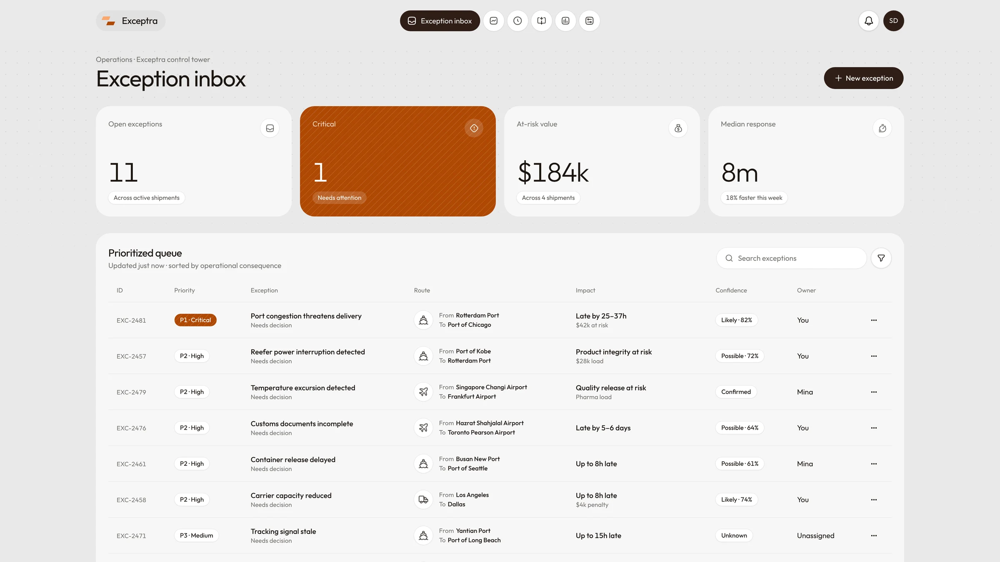

<title>Exceptra Case Study E</title>
<meta name="claude:viewport-fit-sides" content="cover">
<link rel="preconnect" href="https://fonts.googleapis.com">
<link rel="preconnect" href="https://fonts.gstatic.com" crossorigin>
<link rel="stylesheet" href="https://fonts.googleapis.com/css2?family=Outfit:wght@300;400;500;600;700&family=Plus+Jakarta+Sans:wght@400;500;600&family=Geist+Mono:wght@400;500&family=Instrument+Serif:ital@0;1&display=swap">
<style>
/* Direction: "the night shift and the morning report". Dark operations-floor sections carry the live product;
   paper sections carry the thinking. Variation E, on the redesign: Outfit for voice and product, Geist Mono for the manifest vernacular, the warm canvas
   with the app's dot grid, burnt orange as the one accent, and the two-bar mark's slanted lanes as the recurring device. */
:root{
  --night:#1B1511; --night-2:#241B16; --night-3:#2F241E; --paper:#E9E9E9; --white:#FFFFFF;
  --ink:#1B1511; --ink-2:#4A423D; --mute:#74716E; --mute-d:#9A928C; --line:#E1DFDE; --line-d:rgba(255,255,255,.09);
  --blue:#AF4803; --blue-2:#E67425; --lane:#F9A870; --red:#E8663C; --red-ink:#C34517; --amber:#F1A10A; --green:#3B9555;
  --f-d:"Outfit","Helvetica Neue",Arial,sans-serif; --f-m:"Geist Mono",ui-monospace,Menlo,monospace; --f-p:"Outfit","Helvetica Neue",Arial,sans-serif;
  --gl:max(16px, env(safe-area-inset-left,0px)); --gr:max(16px, env(safe-area-inset-right,0px));
  color-scheme:light;
}
*,*::before,*::after{box-sizing:border-box}
html{scroll-behavior:auto}
body{background:var(--white);color:#fff;font-family:var(--f-d);font-size:17px;line-height:1.55;-webkit-font-smoothing:antialiased;overflow-x:hidden}
body::before{content:"";position:fixed;inset:0 0 auto;height:env(safe-area-inset-top,0px);z-index:30;background:var(--white)}
img,video{display:block;max-width:100%;height:auto}
a{color:inherit}
:focus-visible{outline:2px solid var(--blue-2);outline-offset:3px;border-radius:6px}
.wrap{max-width:1360px;margin:0 auto;padding-left:max(var(--gl),clamp(16px,5vw,64px));padding-right:max(var(--gr),clamp(16px,5vw,64px))}
.sec{position:relative;padding-block:clamp(96px,12vw,180px)}
.dark{background:var(--night);color:#fff}
.paper{background:var(--paper);color:var(--ink)}
.white{background:var(--white);color:var(--ink)}
.mono{font-family:var(--f-m);font-size:12px;letter-spacing:.04em;text-transform:uppercase}
.dark .mono{color:var(--mute-d)} .paper .mono,.white .mono{color:var(--mute)}
.mono b{font-weight:500;color:inherit;opacity:1}
.dark .mono b{color:#fff} .paper .mono b,.white .mono b{color:var(--ink)}
h1,h2,h3,h4{margin:0;font-family:var(--f-d);font-weight:500;letter-spacing:-.04em;text-wrap:balance}
.h1{font-size:clamp(54px,9.6vw,148px);line-height:.92;letter-spacing:-.055em}
.h2{font-size:clamp(40px,6vw,92px);line-height:.96;letter-spacing:-.05em}
.h3{font-size:clamp(28px,3.2vw,46px);line-height:1.04;letter-spacing:-.035em}
.dim{color:var(--mute-d)} .paper .dim,.white .dim{color:#A29C97}
.blue{color:var(--blue-2)} .paper .blue,.white .blue{color:var(--blue)}
p{margin:0;max-width:60ch}
.lede{font-size:clamp(19px,1.55vw,22px);line-height:1.5;letter-spacing:-.01em}
.dark p{color:#C9C2BC} .paper p,.white p{color:var(--ink-2)}
.dark .lede{color:#EEE9E5} .paper .lede,.white .lede{color:var(--ink)}
.row{display:grid;grid-template-columns:repeat(12,minmax(0,1fr));column-gap:24px;row-gap:32px}
.c1{grid-column:1 / span 6;min-width:0}.c2{grid-column:8 / span 5;min-width:0}
.c-wide{grid-column:1 / span 8;min-width:0}.c-side{grid-column:10 / span 3;min-width:0;align-self:end}
@media (max-width:900px){.row>*{grid-column:1 / -1 !important}}
.eyebrow{display:flex;gap:14px;align-items:center;margin-bottom:28px}
.eyebrow i{width:22px;height:9px;clip-path:polygon(28% 0,100% 0,72% 100%,0 100%);background:var(--blue)}
.lanes-bg{position:absolute;pointer-events:none;inset:0;overflow:hidden}
.lanes-bg i{position:absolute;display:block;clip-path:polygon(10% 0,100% 0,90% 100%,0 100%)}

/* nav */
.nav{position:fixed;left:0;right:0;top:env(safe-area-inset-top,0px);z-index:20;transition:background .3s,border-color .3s;border-bottom:1px solid transparent}
.nav.solid{background:rgba(27,21,17,.82);backdrop-filter:blur(14px);-webkit-backdrop-filter:blur(14px);border-color:var(--line-d)}
.nav .wrap{height:64px;display:flex;align-items:center;justify-content:space-between;gap:16px}
.nav svg{height:24px;width:auto;color:#fff}
.nav nav{display:flex;gap:26px;align-items:center}
.nav nav a{font-size:14px;color:#C9C2BC;text-decoration:none}
.nav nav a:hover{color:#fff}
.pillbtn{display:inline-flex;align-items:center;gap:8px;height:38px;padding:0 16px;border-radius:999px;background:#fff;color:var(--ink)!important;font:500 14px var(--f-d);text-decoration:none;white-space:nowrap}
@media (max-width:760px){.nav nav a:not(.pillbtn){display:none}}

/* HERO */
.hero{min-height:min(100svh,980px);padding-top:clamp(80px,10vw,140px);padding-bottom:clamp(48px,6vw,80px);overflow:hidden;position:relative}
.hero .map{position:absolute;right:-6%;top:6%;width:min(1180px,96%);opacity:.95}
.hero .map svg{width:100%;height:auto;display:block}
.route{fill:none;stroke:var(--blue-2);stroke-width:1.6;stroke-linecap:round}
.route-base{fill:none;stroke:rgba(255,255,255,.14);stroke-width:1;stroke-dasharray:2 5}
.port circle{fill:#fff}
.port text{font-family:var(--f-m);font-size:10px;fill:var(--mute-d);letter-spacing:.04em}
.pulse{fill:none;stroke:var(--red);stroke-width:1.5}
.hero-copy{position:relative;z-index:2;max-width:980px}
.hero-copy .h1 span{display:block}
.hero-sub{display:grid;grid-template-columns:minmax(0,1fr) auto;gap:32px;align-items:end;margin-top:clamp(36px,5vw,64px);position:relative;z-index:2}
@media (max-width:900px){.hero-sub{grid-template-columns:1fr}}
.manifest{display:grid;grid-template-columns:repeat(4,auto);gap:0;border-top:1px solid var(--line-d);margin-top:clamp(56px,7vw,96px);position:relative;z-index:2}
.manifest div{padding:16px 28px 0 0;display:flex;flex-direction:column;gap:6px;min-width:0}
.manifest div+div{padding-left:28px;border-left:1px solid var(--line-d)}
.manifest strong{font:500 16px/1.35 var(--f-d);color:#fff;letter-spacing:-.01em}
@media (max-width:760px){.manifest{grid-template-columns:1fr 1fr;row-gap:22px}.manifest div:nth-child(3){padding-left:0;border-left:0}}
.alertcard{position:absolute;z-index:3;right:clamp(16px,6vw,96px);top:clamp(330px,34vw,430px);width:min(420px,40vw);background:rgba(47,36,30,.72);backdrop-filter:blur(18px);-webkit-backdrop-filter:blur(18px);border:1px solid rgba(255,255,255,.1);border-radius:18px;padding:18px;box-shadow:0 40px 80px -30px rgba(0,0,0,.7)}
@media (max-width:900px){.alertcard{position:relative;right:auto;top:auto;width:100%;margin-top:40px}}
.alertcard .top{display:flex;justify-content:space-between;align-items:center;gap:10px}
.alertcard .id{font:500 12px var(--f-m);color:var(--mute-d)}
.badge{display:inline-flex;align-items:center;gap:6px;height:24px;padding:0 10px;border-radius:999px;font:500 12px/1 var(--f-p);white-space:nowrap}
.badge.red{background:rgba(232,102,60,.14);color:#F4A07E}.badge.amber{background:rgba(241,161,10,.16);color:#F6C35A}
.badge.blue{background:rgba(230,116,37,.16);color:#F9A870}.badge.green{background:rgba(59,149,85,.18);color:#8FCB9F}
.badge i{width:6px;height:6px;border-radius:50%;background:currentColor}
.alertcard h4{font:600 17px/1.3 var(--f-p);letter-spacing:-.01em;margin:12px 0 4px;color:#fff}
.alertcard .rt{font:400 13px var(--f-p);color:var(--mute-d)}
.spark{margin-top:14px;height:74px;position:relative}
.spark svg{width:100%;height:100%;display:block}
.spark .ln{fill:none;stroke:var(--lane);stroke-width:2;stroke-linecap:round;stroke-linejoin:round}
.spark .gap{fill:rgba(232,102,60,.12)}
.spark .gt{font:500 10px var(--f-m);fill:#F4A07E}
.scroll-cue{position:absolute;left:50%;bottom:22px;transform:translateX(-50%);z-index:2}

/* FILM */
.filmwrap{position:relative}
.frame{border-radius:20px;overflow:hidden;background:#000;box-shadow:0 0 0 1px rgba(255,255,255,.08),0 80px 140px -60px rgba(175,72,3,.55),0 40px 80px -40px rgba(0,0,0,.8)}
.frame video{width:100%;aspect-ratio:16/9;object-fit:cover}
.snd{position:absolute;right:max(16px,env(safe-area-inset-right,0px));bottom:16px;border:0;height:40px;padding:0 16px;border-radius:999px;background:rgba(255,255,255,.92);color:var(--ink);font:500 13px var(--f-d);cursor:pointer;display:inline-flex;gap:8px;align-items:center}
.film-meta{display:flex;justify-content:space-between;gap:12px;flex-wrap:wrap;margin-top:18px}

.promo{position:relative;background:#000;width:100%;overflow:hidden}
.promo video{width:100%;aspect-ratio:16/9;object-fit:cover;display:block;max-height:100svh}
.promo .snd{bottom:max(18px,env(safe-area-inset-bottom,0px));right:max(18px,env(safe-area-inset-right,0px))}
.promo-cap{position:absolute;left:max(18px,env(safe-area-inset-left,0px));bottom:28px;color:rgba(255,255,255,.75)!important}
@media (max-width:600px){.promo-cap{display:none}}
.intro{padding-block:clamp(72px,9vw,130px) clamp(56px,7vw,100px)}
.in-row{display:grid;grid-template-columns:1fr 1fr;column-gap:clamp(24px,4vw,64px);row-gap:16px;padding-block:clamp(24px,2.8vw,40px)}
.in-meta{padding-top:0}
.in-rule{border-top:1px solid var(--line)}
.in-col{min-width:0;display:flex;flex-direction:column;gap:14px}
.in-k{font:600 clamp(17px,1.4vw,21px)/1.2 var(--f-d);letter-spacing:.01em;text-transform:uppercase;color:var(--ink)}
.intro p{font:400 clamp(16px,1.3vw,19px)/1.5 var(--f-d);color:var(--ink);max-width:58ch;letter-spacing:-.005em}
.in-meta p{line-height:1.65}
.in-mark{width:clamp(64px,6vw,96px);height:auto}
.in-h{font:500 clamp(48px,5.8vw,84px)/1 var(--f-d);letter-spacing:-.045em;color:var(--ink)}
.intro .in-tag{font-weight:500;margin-top:8px}
.in-facts{display:grid;grid-template-columns:1fr 1fr;gap:18px 24px}
.in-facts div{font:400 clamp(16px,1.3vw,19px)/1.4 var(--f-d);color:var(--ink);display:flex;flex-direction:column;gap:4px}
.in-facts span{font:500 12px var(--f-m);letter-spacing:.06em;text-transform:uppercase;color:var(--mute)}
@media (max-width:760px){.in-row{grid-template-columns:1fr}.in-facts{grid-template-columns:1fr 1fr}}
.intro,.intro *{font-family:var(--f-p)!important}
.intro .in-h{letter-spacing:-.03em;font-weight:600;font-size:clamp(28px,2.8vw,40px);line-height:1.05}
.intro p,.intro .in-facts div{letter-spacing:0;font-size:16px;line-height:1.6}
.intro .in-facts span{letter-spacing:.06em;font-size:12px;font-weight:600}
/* STORY (pinned) */
.story{position:relative}
.story .stage{position:relative;min-height:100svh;display:flex;align-items:center}
.story .stage .wrap{width:100%}
.st-grid{display:grid;grid-template-columns:minmax(0,5fr) minmax(0,7fr);gap:clamp(24px,4vw,72px);align-items:center}
@media (max-width:900px){.st-grid{grid-template-columns:1fr}}
.st-lines{position:relative;font-size:clamp(36px,4.8vw,72px);min-height:3.15em}
.st-line{font:500 1em/1.02 var(--f-d);letter-spacing:-.05em;color:var(--ink)}
.st-line .r{color:var(--red-ink)}
.js .st-line+.st-line{position:absolute;left:0;top:0}
.tele{position:relative;background:var(--white);border-radius:22px;box-shadow:0 0 0 1px var(--line),0 40px 90px -50px rgba(27,21,17,.35);padding:clamp(16px,2.4vw,28px);overflow:hidden}
.tele .head{display:flex;justify-content:space-between;gap:12px;flex-wrap:wrap;align-items:center}
.tele svg{width:100%;height:auto;display:block;margin-top:12px}
.tele .tl{fill:none;stroke:var(--blue);stroke-width:2.6;stroke-linecap:round;stroke-linejoin:round}
.tele .grid line{stroke:#E7E4E2}
.tele text{font:500 11px var(--f-m);fill:var(--mute)}
.flood{position:relative;display:grid;grid-template-columns:repeat(2,minmax(0,1fr));gap:8px;margin-top:16px;padding-top:16px;border-top:1px solid #E7E4E2}
@media (max-width:520px){.flood{grid-template-columns:1fr}}
.fchip{position:relative;display:flex;align-items:center;gap:8px;padding:9px 12px;border-radius:10px;background:#F0F0F0;font:500 12.5px var(--f-p);color:#2F241E;white-space:nowrap;min-width:0;overflow:hidden}
.fchip span{overflow:hidden;text-overflow:ellipsis}
.fchip.more{background:transparent;box-shadow:inset 0 0 0 1px #E4E1DF;color:#74716E}
.fchip.more i{display:none}
.fchip i{width:7px;height:7px;border-radius:50%;background:var(--red-ink)} .fchip.a i{background:var(--amber)}
.fchip b{font-weight:600}
.counter{font:500 clamp(64px,8vw,120px)/.9 var(--f-d);letter-spacing:-.06em;color:var(--ink);font-variant-numeric:tabular-nums}
.counter small{font:400 13px var(--f-m);letter-spacing:.04em;color:var(--mute);text-transform:uppercase;margin-left:10px;vertical-align:middle}

/* CHALLENGE */
.kin{display:flex;flex-direction:column;border-top:1px solid var(--line-d);margin-top:clamp(40px,5vw,72px)}
.kin .k{display:grid;grid-template-columns:120px minmax(0,1fr) auto;gap:24px;align-items:baseline;padding:22px 0;border-bottom:1px solid var(--line-d)}
.kin .k b{font:500 clamp(28px,4vw,58px)/1 var(--f-d);letter-spacing:-.045em;color:#fff}
.kin .k .w{color:#5E554F;transition:color .5s}
.kin .k.on .w{color:#fff}
.kin .k.on.last .w{color:var(--red)}
.kin .src{font:400 12px var(--f-m);color:var(--mute-d);text-align:right;text-transform:uppercase;letter-spacing:.04em}
@media (max-width:700px){.kin .k{grid-template-columns:1fr}.kin .src{text-align:left}}
.question{margin-top:clamp(64px,8vw,120px);display:grid;grid-template-columns:minmax(0,3fr) minmax(0,9fr);gap:24px}
@media (max-width:900px){.question{grid-template-columns:1fr}}
.question p.q{font:400 clamp(30px,3.6vw,54px)/1.1 var(--f-d);letter-spacing:-.04em;color:#fff;max-width:28ch}
.question p.q span{color:var(--lane)}

/* RESEARCH */
.qs{display:grid;grid-template-columns:repeat(4,minmax(0,1fr));gap:0;margin-top:clamp(48px,6vw,88px);border-top:1px solid var(--ink)}
@media (max-width:900px){.qs{grid-template-columns:1fr 1fr}}
@media (max-width:560px){.qs{grid-template-columns:1fr}}
.qs article{padding:24px 24px 32px 0;display:flex;flex-direction:column;gap:18px;min-width:0}
.qs article+article{padding-left:24px;border-left:1px solid var(--line)}
@media (max-width:900px){.qs article:nth-child(3){padding-left:0;border-left:0}}
@media (max-width:560px){.qs article{padding-left:0!important;border-left:0!important;border-bottom:1px solid var(--line)}}
.qs .n{font:300 clamp(80px,8vw,128px)/.8 var(--f-d);letter-spacing:-.07em;color:var(--blue)}
.qs h4{font:500 24px/1.15 var(--f-d);letter-spacing:-.03em;color:var(--ink)}
.qs p{font-size:15px}
.boundary{margin-top:40px;display:flex;gap:18px;align-items:flex-start;padding:20px 22px;border-radius:16px;background:var(--white);box-shadow:0 0 0 1px var(--line)}
.boundary p{font-size:14.5px;max-width:none}

/* PROCESS */
.proc{display:grid;grid-template-columns:repeat(6,minmax(0,1fr));gap:12px;margin-top:clamp(48px,6vw,80px)}
@media (max-width:1000px){.proc{grid-template-columns:repeat(3,minmax(0,1fr))}}
@media (max-width:600px){.proc{grid-template-columns:1fr}}
.pstep{border-radius:18px;background:var(--white);box-shadow:0 0 0 1px var(--line);padding:20px;display:flex;flex-direction:column;gap:30px;min-height:240px;justify-content:space-between}
.pstep .n{font:500 12px var(--f-m);color:var(--blue)}
.pstep h4{font:500 21px/1.15 var(--f-d);letter-spacing:-.025em;color:var(--ink)}
.pstep p{font-size:14px;margin-top:8px}
.pstep .bar{height:4px;border-radius:2px;background:var(--line);overflow:hidden}
.pstep .bar i{display:block;height:100%;background:var(--blue);transform-origin:0 50%}

/* INSIGHT */
.insight .h-mega{font:500 clamp(64px,11.5vw,184px)/.86 var(--f-d);letter-spacing:-.065em;color:#fff}
.insight .h-mega span{color:var(--blue-2)}
.machine{margin-top:clamp(48px,6vw,88px);display:grid;grid-template-columns:repeat(4,minmax(0,1fr));gap:12px}
@media (max-width:900px){.machine{grid-template-columns:1fr 1fr}}
@media (max-width:520px){.machine{grid-template-columns:1fr}}
.mstate{border-radius:18px;background:var(--night-2);border:1px solid var(--line-d);padding:20px;display:flex;flex-direction:column;gap:14px;min-height:210px;position:relative;transition:border-color .4s,background .4s}
.mstate .k{font:500 11.5px var(--f-m);letter-spacing:.06em;text-transform:uppercase;color:var(--mute-d)}
.mstate h4{font:500 22px/1.15 var(--f-d);letter-spacing:-.025em;color:#fff}
.mstate p{font-size:14px;color:#A9A19B}
.mstate.on{border-color:rgba(230,116,37,.6);background:#2A1C15}
.mstate .line-x{position:absolute;right:-12px;top:50%;width:12px;height:1px;background:var(--line-d)}
.mstate:last-child .line-x{display:none}
.split{display:grid;grid-template-columns:1fr 1fr;gap:12px;margin-top:12px}
@media (max-width:700px){.split{grid-template-columns:1fr}}
.split div{border-radius:18px;padding:22px;border:1px solid var(--line-d)}
.split .k{font:500 11.5px var(--f-m);letter-spacing:.06em;text-transform:uppercase;color:var(--mute-d)}
.split b{display:block;font:500 clamp(24px,2.6vw,36px)/1.05 var(--f-d);letter-spacing:-.035em;color:#fff;margin:10px 0 6px}

/* FLOW lane diagram */
.flowsvg{margin-top:clamp(40px,5vw,72px);background:var(--night-2);border:1px solid var(--line-d);border-radius:24px;padding:clamp(12px,2vw,28px);overflow-x:auto}
.flowsvg svg{display:block;width:100%;min-width:760px;height:auto}
.flowsvg .main{fill:none;stroke:#fff;stroke-width:2}
.flowsvg .br{fill:none;stroke:var(--amber);stroke-width:1.6;stroke-dasharray:4 6}
.flowsvg .node rect{fill:var(--night-3);stroke:rgba(255,255,255,.18)}
.flowsvg .node text{font-family:var(--f-d);font-size:16px;fill:#fff;letter-spacing:-.3px}
.flowsvg .node.m rect{fill:#fff;stroke:#fff} .flowsvg .node.m text{fill:var(--ink);font-weight:500}
.flowsvg .bn rect{fill:rgba(241,161,10,.12);stroke:rgba(241,161,10,.5)} .flowsvg .bn text{font-family:var(--f-d);font-size:13px;fill:#F6C35A}
.flowsvg .lbl{font-family:var(--f-m);font-size:10.5px;fill:var(--mute-d);letter-spacing:.06em}

/* PRINCIPLES */
.pr{display:grid;grid-template-columns:minmax(0,5fr) minmax(0,7fr);gap:clamp(28px,5vw,88px);align-items:center}
.pr.flip .pr-text{order:2}
@media (max-width:900px){.pr{grid-template-columns:1fr}.pr.flip .pr-text{order:0}}
.pr-text{display:flex;flex-direction:column;gap:22px}
.pr-num{display:flex;align-items:center;gap:12px}
.pr-num b{font:500 13px var(--f-m);color:var(--blue)}
.pr-num i{flex:1;height:1px;background:var(--line);max-width:120px}
.dark .pr-num i{background:var(--line-d)} .dark .pr-num b{color:var(--blue-2)}
.pp{display:flex;flex-direction:column;gap:0;border-top:1px solid var(--line)}
.dark .pp{border-color:var(--line-d)}
.pp div{display:grid;grid-template-columns:110px 1fr;gap:16px;padding:14px 0;border-bottom:1px solid var(--line);font-size:15px}
.dark .pp div{border-color:var(--line-d)}
.pp span{font:500 11.5px var(--f-m);letter-spacing:.06em;text-transform:uppercase;padding-top:3px}
.pp .pa span{color:var(--red-ink)} .dark .pp .pa span{color:#F4A07E}
.pp .re span{color:var(--blue)} .dark .pp .re span{color:var(--blue-2)}
.pp p{font-size:15px}
.principle{font:400 15px/1.5 var(--f-d);color:var(--mute);padding-left:16px;border-left:2px solid var(--blue)}
.dark .principle{color:var(--mute-d)}
.replay{all:unset;cursor:pointer;display:inline-flex;align-items:center;gap:8px;font:500 13px var(--f-m);letter-spacing:.04em;text-transform:uppercase;color:var(--mute)}
.dark .replay{color:var(--mute-d)}
.replay:hover{color:var(--blue)}

/* live product components */
.ui{font-family:var(--f-p);color:#1B1511}
.win{background:#fff;border-radius:18px;box-shadow:0 0 0 1px rgba(27,21,17,.07),0 2px 4px rgba(27,21,17,.04),0 50px 100px -50px rgba(27,21,17,.45);overflow:hidden}
.dark .win{box-shadow:0 0 0 1px rgba(255,255,255,.06),0 60px 120px -50px rgba(175,72,3,.45),0 40px 80px -40px rgba(0,0,0,.8)}
.win-bar{display:flex;align-items:center;gap:7px;height:38px;padding:0 14px;border-bottom:1px solid #E7E4E2;background:#F7F7F7}
.win-bar i{width:9px;height:9px;border-radius:50%;background:#E2DFDD}
.win-bar span{margin-left:10px;font:400 11.5px var(--f-m);color:#A29C97;letter-spacing:.02em}
.win-body{padding:clamp(14px,2vw,22px)}
.chip{display:inline-flex;align-items:center;gap:6px;height:24px;padding:0 9px;border-radius:999px;font:500 11.5px/1 var(--f-p);white-space:nowrap}
.chip.p1{color:#A83A12;background:#FCEDE6;box-shadow:inset 0 0 0 1px #F1C0A8}.chip.p2{color:#8A5A00;background:#FFF4D6;box-shadow:inset 0 0 0 1px #F3D58A}.chip.p3{color:#5A524C;background:#EDEAE8;box-shadow:inset 0 0 0 1px #E1DFDE}
.chip.ver{color:#2D6E40;background:#E8F3EB}.chip.inf{color:#AF4803;background:#FFECDD}.chip.imp{color:#7A4A2E;background:#F6EEE8}.chip.gap{color:#A83A12;background:#FCEDE6}
.chip.mon{color:#AF4803;background:#FFECDD}.chip.ok{color:#2D6E40;background:#E8F3EB}.chip.back{color:#A83A12;background:#FCEDE6}
/* queue */
.q-head,.q-row{display:grid;grid-template-columns:78px 92px minmax(0,1.6fr) minmax(0,1.2fr) 86px;gap:12px;align-items:center;padding:0 14px}
.q-head{height:34px;font:500 10.5px var(--f-p);letter-spacing:.06em;text-transform:uppercase;color:#8C8681;border-bottom:1px solid #E7E4E2}
.q-list{position:relative}
.q-row{height:58px;border-bottom:1px solid #ECE9E7;font-size:13px;position:absolute;left:0;right:0;background:#fff;transition:background .4s}
.q-row .id{font:500 11px var(--f-m);color:#A29C97}
.q-row .t{font-weight:600;font-size:13px;min-width:0;overflow:hidden;text-overflow:ellipsis;white-space:nowrap}
.q-row .t small{display:block;font-weight:400;color:#8C8681;font-size:11.5px}
.q-row .im{color:#5A524C;font-size:12.5px;min-width:0;overflow:hidden;text-overflow:ellipsis;white-space:nowrap}
.q-row .cf{font-size:12.5px;color:#5A524C}
.q-row.hot{background:#FFF4EA;box-shadow:inset 3px 0 0 var(--blue)}
@media (max-width:640px){.q-head,.q-row{grid-template-columns:70px 84px minmax(0,1fr)}.q-head span:nth-child(n+4),.q-row>*:nth-child(n+4){display:none}}
/* assessment */
.as-top{display:flex;justify-content:space-between;align-items:center;gap:10px;flex-wrap:wrap}
.as-top b{font:600 16px var(--f-p)}
.as-grid{display:grid;grid-template-columns:1fr 1fr;border:1px solid #E7E4E2;border-radius:14px;overflow:hidden;margin-top:14px}
.as-grid div{padding:14px;display:flex;flex-direction:column;gap:7px;font-size:13px;color:#5A524C;min-height:98px;transition:background .4s,opacity .4s}
.as-grid div:nth-child(2n){border-left:1px solid #E7E4E2}.as-grid div:nth-child(n+3){border-top:1px solid #E7E4E2}
.as-grid .h{display:flex;gap:8px;align-items:center;font-weight:600;color:#1B1511}
.as-grid .dimmed{opacity:.28}
@media (max-width:520px){.as-grid{grid-template-columns:1fr}.as-grid div:nth-child(2n){border-left:0}.as-grid div+div{border-top:1px solid #E7E4E2}}
.meter{margin-top:14px;border:1px solid #E7E4E2;border-radius:14px;padding:14px;display:grid;grid-template-columns:auto 1fr auto;gap:16px;align-items:center}
.meter .v{font:500 28px/1 var(--f-d);letter-spacing:-.04em;font-variant-numeric:tabular-nums}
.meter .trk{height:6px;border-radius:3px;background:#E7E4E2;overflow:hidden}
.meter .trk i{display:block;height:100%;width:72%;background:#1B1511;border-radius:3px;transform-origin:0 50%}
.meter .s{font-size:12px;color:#8C8681;text-align:right}
.lenses{display:flex;flex-wrap:wrap;gap:8px;margin-top:18px}
.lenses button{all:unset;cursor:pointer;height:34px;padding:0 14px;border-radius:999px;font:500 13px var(--f-d);box-shadow:inset 0 0 0 1px var(--line);color:var(--ink-2);background:var(--white)}
.lenses button[aria-pressed="true"]{background:var(--ink);color:#fff;box-shadow:none}
/* options */
.op{display:grid;grid-template-columns:minmax(0,1.3fr) repeat(3,minmax(0,1fr));gap:14px;align-items:center;padding:16px 14px;border-bottom:1px solid #ECE9E7;cursor:pointer;border-radius:12px;transition:background .3s}
.op:hover{background:#F7F7F7}
.op.sel{background:#FFF4EA;box-shadow:inset 0 0 0 1.5px var(--blue)}
.op .nm{font-weight:600;font-size:14px;line-height:1.3}
.op .nm small{display:block;font-weight:400;font-size:11.5px;color:#8C8681;margin-top:3px}
.op .m{display:flex;flex-direction:column;gap:6px;font-size:11.5px;color:#8C8681}
.op .m b{font:500 18px/1 var(--f-d);letter-spacing:-.03em;color:#1B1511;font-variant-numeric:tabular-nums}
.op .m .b{height:4px;border-radius:2px;background:#E7E4E2;overflow:hidden}
.op .m .b i{display:block;height:100%;background:#1B1511;transform-origin:0 50%}
.op.sel .m .b i{background:var(--blue)}
@media (max-width:600px){.op{grid-template-columns:1fr 1fr}.op .nm{grid-column:1 / -1}}
.op-note{margin-top:12px;padding:12px 14px;border-radius:12px;background:#F0F0F0;font-size:13px;color:#4A423D}
/* authority gauge */
.gauge{position:relative;height:200px;margin-top:8px}
.gauge .axis{position:absolute;left:0;right:0;bottom:44px;height:2px;background:#E1DFDE}
.gauge .lim{position:absolute;bottom:30px;top:0;width:0;border-left:2px dashed var(--red-ink)}
.gauge .lim span{position:absolute;top:0;left:8px;font:500 11px var(--f-m);color:var(--red-ink);white-space:nowrap;letter-spacing:.04em}
.gauge .dotp{position:absolute;bottom:38px;width:14px;height:14px;border-radius:50%;transform:translateX(-50%);background:#1B1511;box-shadow:0 0 0 5px #fff}
.gauge .dotp.over{background:var(--blue)}
.gauge .dl{position:absolute;bottom:62px;transform:translateX(-50%);font:500 12px var(--f-p);white-space:nowrap;text-align:center;color:#1B1511}
.gauge .dl small{display:block;font:400 11px var(--f-m);color:#8C8681}
.gauge .tick{position:absolute;bottom:14px;transform:translateX(-50%);font:400 11px var(--f-m);color:#A29C97}
.gate{display:grid;grid-template-columns:repeat(2,minmax(0,1fr));gap:10px;margin-top:14px}
.gate div{border-radius:12px;padding:12px 14px;font-size:13px;color:#4A423D;background:#F0F0F0}
.gate b{display:block;font-weight:600;color:#1B1511;margin-bottom:2px}
/* resolution */
.res-steps{display:grid;grid-template-columns:repeat(4,minmax(0,1fr));gap:8px;margin-top:14px}
.res-steps div{display:flex;flex-direction:column;gap:8px;font-size:12px;color:#8C8681}
.res-steps i{height:4px;border-radius:2px;background:#E7E4E2;overflow:hidden;display:block}
.res-steps i b{display:block;height:100%;width:0;background:var(--blue);transition:width .6s}
.res-steps div.done{color:#1B1511}
.res-steps div.done i b{width:100%}
.res-steps div.fail i b{width:100%;background:var(--red-ink)}
.res-msg{margin-top:14px;padding:12px 14px;border-radius:12px;font-size:13px;transition:background .3s,color .3s}
.evbtns{display:flex;flex-wrap:wrap;gap:8px;margin-top:8px}
.evbtns button{all:unset;cursor:pointer;height:38px;padding:0 16px;border-radius:999px;font:500 13.5px var(--f-d)}
.evbtns .v{background:#fff;color:var(--ink)} .evbtns .c{box-shadow:inset 0 0 0 1px rgba(255,255,255,.35);color:#fff} .evbtns .r{color:var(--mute-d)}

/* product reel */
.reel{display:flex;gap:20px;overflow-x:auto;scroll-snap-type:x mandatory;padding:8px max(var(--gr),clamp(16px,5vw,64px)) 28px max(var(--gl),clamp(16px,5vw,64px));scrollbar-width:thin}
.reel figure{margin:0;flex:0 0 min(78vw,980px);scroll-snap-align:center}
.reel .win img{width:100%}
.reel figcaption{display:flex;justify-content:space-between;gap:12px;margin-top:14px}

/* E2E pinned horizontal */
.e2e{position:relative;overflow:hidden}
.e2e-track{display:flex;gap:20px;padding-left:max(var(--gl),clamp(16px,5vw,64px));padding-right:max(var(--gr),clamp(16px,5vw,64px));width:max-content}
.e2e-card{flex:0 0 min(72vw,520px);border-radius:22px;background:var(--night-2);border:1px solid var(--line-d);padding:20px;display:flex;flex-direction:column;gap:16px}
.e2e-card .pic{height:280px;border-radius:14px;background:var(--night-3);display:flex;align-items:center;justify-content:center;overflow:hidden;padding:16px}
.e2e-card .pic img{max-height:100%;width:auto;border-radius:10px;box-shadow:0 20px 40px -18px rgba(0,0,0,.7)}
.e2e-card .n{font:500 12px var(--f-m);color:var(--blue-2)}
.e2e-card h4{font:500 26px/1.1 var(--f-d);letter-spacing:-.03em;color:#fff}
.e2e-card p{font-size:14.5px}
@media (max-width:900px){.e2e-track{width:auto;overflow-x:auto;scroll-snap-type:x mandatory}.e2e-card{scroll-snap-align:start}}

/* design language */
.type-hero{font:600 clamp(80px,16vw,260px)/.82 var(--f-p);letter-spacing:-.05em;color:var(--ink);margin-top:clamp(28px,4vw,56px)}
.wrow{display:grid;grid-template-columns:repeat(4,minmax(0,1fr));border-top:1px solid var(--ink);margin-top:clamp(36px,4vw,56px)}
@media (max-width:760px){.wrow{grid-template-columns:1fr 1fr}}
.wrow div{padding:16px 16px 0 0;display:flex;flex-direction:column;gap:8px;min-width:0}
.wrow div+div{padding-left:16px;border-left:1px solid var(--line)}
@media (max-width:760px){.wrow div:nth-child(3){padding-left:0;border-left:0}}
.wrow b{font:400 clamp(26px,3vw,42px)/1 var(--f-p);letter-spacing:-.03em;color:var(--ink)}
.wrow p{font-size:14px}
.pal{display:grid;grid-template-columns:2.4fr 1.6fr 1fr .6fr .4fr .4fr;height:clamp(200px,22vw,300px);border-radius:22px;overflow:hidden;margin-top:clamp(40px,5vw,72px)}
.pal div{position:relative;padding:16px;display:flex;flex-direction:column;justify-content:flex-end;gap:4px;min-width:0;transform-origin:0 100%}
.pal b{font:500 15px var(--f-d)} .pal span{font:400 11.5px var(--f-m);letter-spacing:.03em;white-space:nowrap;overflow:hidden;text-overflow:ellipsis}
@media (max-width:760px){.pal{grid-template-columns:1fr 1fr;height:auto}.pal div{min-height:110px}}
.meaning{display:grid;grid-template-columns:repeat(3,minmax(0,1fr));gap:24px;margin-top:clamp(40px,5vw,64px)}
@media (max-width:900px){.meaning{grid-template-columns:1fr}}
.meaning article{padding-top:16px;border-top:1px solid var(--ink);display:flex;flex-direction:column;gap:10px}
.meaning h4{font:500 22px/1.15 var(--f-d);letter-spacing:-.025em;color:var(--ink)}

/* coverage, closing */
.cov{display:grid;grid-template-columns:repeat(3,minmax(0,1fr));gap:12px;margin-top:clamp(40px,5vw,72px)}
@media (max-width:900px){.cov{grid-template-columns:1fr}}
.cov article{border-radius:20px;background:var(--white);box-shadow:0 0 0 1px var(--line);padding:24px;display:flex;flex-direction:column;gap:12px}
.cov .big{font:300 clamp(64px,7vw,104px)/.85 var(--f-d);letter-spacing:-.07em;color:var(--ink)}
.cov h4{font:500 20px var(--f-d);letter-spacing:-.02em;color:var(--ink)}
.cov p{font-size:14.5px}
.next{display:grid;grid-template-columns:repeat(3,minmax(0,1fr));gap:0;margin-top:clamp(48px,6vw,80px);border-top:1px solid var(--ink)}
@media (max-width:900px){.next{grid-template-columns:1fr}}
.next div{padding:18px 20px 0 0;display:flex;flex-direction:column;gap:8px}
.next div+div{padding-left:20px;border-left:1px solid var(--line)}
@media (max-width:900px){.next div+div{padding-left:0;border-left:0;padding-top:18px}}
.next b{font:500 22px var(--f-d);letter-spacing:-.025em;color:var(--ink)}
.closing .h-mega{font:500 clamp(56px,10vw,160px)/.9 var(--f-d);letter-spacing:-.06em}
.closing .h-mega span{display:block}
.closing .h-mega span:nth-child(2){color:#5E554F}
.closing .h-mega span:nth-child(3){color:var(--blue-2)}
.ctas{display:flex;flex-wrap:wrap;gap:12px;margin-top:48px}
.cta{display:inline-flex;align-items:center;gap:10px;height:52px;padding:0 24px;border-radius:999px;font:500 15px var(--f-d);text-decoration:none;white-space:nowrap}
.cta.w{background:#fff;color:var(--ink)} .cta.o{box-shadow:inset 0 0 0 1px rgba(255,255,255,.28);color:#fff}
.foot{border-top:1px solid var(--line-d);padding-block:28px 40px}
.foot .wrap{display:flex;justify-content:space-between;gap:16px;flex-wrap:wrap}
.reveal-mask{overflow:hidden;display:block}
@media (prefers-reduced-motion: reduce){*{transition:none!important;animation:none!important}}

/* ===== Evero-system variation: documentation rows, signature type, one accent, bracket frames ===== */
:root{--f-s:"Instrument Serif",Georgia,"Times New Roman",serif}
.ev{background:var(--white);color:var(--ink);font-family:var(--f-p)}
.ev.paper{background:var(--paper)}
.ev p{font:400 16px/1.6 var(--f-p);letter-spacing:0;color:var(--ink-2)}
.ev-sec{padding-block:clamp(80px,9vw,140px)}
.ev-top{padding-top:clamp(80px,9vw,140px)}
.sh{position:relative;padding-top:clamp(22px,2.4vw,34px)}
.sh-rule{position:absolute;left:0;right:0;top:0;height:1px;background:var(--line);transform-origin:0 50%}
.sh-top{display:flex;justify-content:space-between;align-items:flex-start;gap:24px}
.sh-t{font:500 clamp(40px,5.2vw,78px)/1 var(--f-p);letter-spacing:-.045em;color:var(--ink);display:flex;align-items:flex-start;gap:.2em;text-wrap:nowrap}
.sh-t sup{font:500 13px/1 var(--f-m);letter-spacing:.02em;color:var(--mute);margin-top:.45em}
.sh-arr{width:clamp(24px,2.2vw,32px);height:auto;color:var(--ink);flex:none;margin-top:.5em}
.sh-row{display:grid;grid-template-columns:1fr 1fr;column-gap:clamp(24px,4vw,64px);row-gap:10px;margin-top:clamp(24px,3vw,40px)}
.sh-l{font:500 15px/1.5 var(--f-p);color:var(--ink)}
@media(max-width:760px){.sh-row{grid-template-columns:1fr}.sh-t{text-wrap:wrap}}
.sig{font:500 clamp(28px,3.6vw,52px)/1.08 var(--f-p);letter-spacing:-.035em;color:var(--ink);margin-top:clamp(44px,5vw,80px);max-width:22ch;text-wrap:balance}
.sig em,.ib em,.kin2 .w em,.qbig em,.st-lines em{font-family:var(--f-s);font-style:italic;font-weight:400;letter-spacing:-.01em;font-size:1.08em;line-height:.9}
.sig small,.st-lines small{font:600 max(10px,.22em)/1 var(--f-p);letter-spacing:.08em;text-transform:uppercase;vertical-align:.32em;margin:0 .1em;color:var(--mute)}
/* bracket frame */
.brk{--bc:var(--ink);--bs:14px;--bw:1.5px;
 background:linear-gradient(var(--bc) 0 0) 0 0/var(--bs) var(--bw),linear-gradient(var(--bc) 0 0) 0 0/var(--bw) var(--bs),
 linear-gradient(var(--bc) 0 0) 100% 0/var(--bs) var(--bw),linear-gradient(var(--bc) 0 0) 100% 0/var(--bw) var(--bs),
 linear-gradient(var(--bc) 0 0) 0 100%/var(--bs) var(--bw),linear-gradient(var(--bc) 0 0) 0 100%/var(--bw) var(--bs),
 linear-gradient(var(--bc) 0 0) 100% 100%/var(--bs) var(--bw),linear-gradient(var(--bc) 0 0) 100% 100%/var(--bw) var(--bs);
 background-repeat:no-repeat;box-shadow:inset 0 0 0 1px var(--line)}
/* bands */
.band{position:relative;overflow:hidden;padding-block:clamp(88px,11vw,176px)}
.band.night{background:var(--night);color:#fff}
.band.blue{background:var(--blue);color:#fff}
.band .sh-l{color:rgba(255,255,255,.7)}
.qrow{margin-top:0}
.qbig{font:400 clamp(28px,3.4vw,52px)/1.14 var(--f-p)!important;letter-spacing:-.035em!important;color:#fff!important;max-width:24ch}
.qbig em{color:var(--lane)}
/* story */
.ev.story .stage{min-height:100svh}
/* same two columns as the header row above, so the telemetry card lines up with the paragraph */
.ev .st-grid{grid-template-columns:minmax(0,1fr) minmax(0,1fr);column-gap:clamp(24px,4vw,64px)}
@media(max-width:900px){.ev .st-grid{grid-template-columns:1fr}}
.ev .st-lines{font-size:clamp(36px,4.4vw,66px);min-height:3.3em}
.ev .st-line{font:500 1em/1.05 var(--f-p);letter-spacing:-.045em;color:var(--ink);margin:0;max-width:13ch}
.ev .st-line em.dim{color:#A29C97}
.ev .st-line em.r{color:var(--red-ink)}
.ev .tele{background-color:var(--white);border-radius:0;box-shadow:inset 0 0 0 1px var(--line);padding:clamp(18px,2.4vw,30px)}
/* challenge */
.kin2{margin-top:clamp(48px,6vw,88px);border-top:1px solid var(--line)}
.kin2 .k{display:grid;grid-template-columns:1fr 1fr;column-gap:clamp(24px,4vw,64px);row-gap:8px;align-items:baseline;padding:clamp(20px,2.2vw,30px) 0;border-bottom:1px solid var(--line)}
.kl{display:flex;flex-direction:column;gap:4px;font:400 15px/1.4 var(--f-p);color:var(--mute)}
.kl b{font:500 12px/1 var(--f-m);letter-spacing:.06em;text-transform:uppercase;color:var(--ink)}
.kin2 .w{font:500 clamp(28px,3.4vw,50px)/1.04 var(--f-p);letter-spacing:-.04em;color:#CFCAC6;transition:color .7s}
.kin2 .k.on .w{color:var(--ink)}
.kin2 .k.on.last .w em{color:var(--blue)}
@media(max-width:760px){.kin2 .k{grid-template-columns:1fr}}
/* research */
#research,#e2e{overflow-x:clip}
.rq-pin{position:relative}
/* case film sits on a light video: dark caption and button */
#casefilm .promo-cap{color:rgba(27,21,17,.72)!important}
#casefilm .promo-cap b{color:var(--ink)!important}
#casefilm .snd{background:var(--ink);color:#fff}
.rq-sig{margin-top:clamp(56px,7vw,112px)}
.rq{display:flex;gap:clamp(14px,1.6vw,24px);width:max-content;padding-block:4px;margin-top:clamp(40px,5vw,72px);will-change:transform}
.rq-prog{display:none}
@media(max-width:900px){.rq-pin{overflow-x:auto;scroll-snap-type:x mandatory;scrollbar-width:none;margin-inline:calc(-1 * max(var(--gl),clamp(16px,5vw,64px)));padding-inline:max(var(--gl),clamp(16px,5vw,64px));scroll-padding-inline:max(var(--gl),clamp(16px,5vw,64px))}.rq-pin::-webkit-scrollbar{display:none}.rq-sig{max-width:none;position:sticky;left:0}}
/* desktop: the heading, cards and progress pin together in one viewport; cards run past the right margin to the screen edge */
@media(min-width:901px){
 .js .rq-pin{padding-top:clamp(28px,3vw,48px)}
 .js .rq-sig{margin-top:0;font-size:clamp(36px,4.2vw,64px);max-width:none}
 .js .rq{margin-top:clamp(20px,2.2vw,32px)}
 .js .rq-pic{aspect-ratio:auto;height:clamp(300px,calc(100svh - 500px),470px)}
 .js .rq-prog{display:flex;align-items:center;gap:16px;margin-top:clamp(16px,1.8vw,24px)}
 .rq-cnt{font:500 12px/1 var(--f-m);letter-spacing:.06em;color:var(--ink);font-variant-numeric:tabular-nums;white-space:nowrap}
 .rq-line{flex:1;height:1px;background:var(--line);overflow:hidden}
 .rq-line i{display:block;height:100%;background:var(--ink);transform-origin:0 50%;transform:scaleX(0)}
}
.rq article{flex:0 0 min(64vw,780px);padding:clamp(18px,2vw,28px);display:flex;flex-direction:column;gap:16px;min-width:0;background-color:var(--white);scroll-snap-align:start;transform-origin:0 50%}
@media(max-width:900px){.rq article{flex-basis:min(84vw,520px)}}
.rq-top{display:flex;justify-content:space-between;align-items:center;color:var(--ink);line-height:1}
.rq-arr{width:clamp(22px,2vw,28px);height:auto;flex:none;transition:transform .4s cubic-bezier(.2,.8,.2,1)}
.rqc:hover .rq-arr{transform:translate(3px,-3px)}
.rq-k{font:500 12px/1 var(--f-m);letter-spacing:.06em;text-transform:uppercase;color:var(--mute)}
.rq h4{font:500 clamp(26px,2.8vw,42px)/1.08 var(--f-p);letter-spacing:-.04em;color:var(--ink)}
.rq-pic{aspect-ratio:16/10;background:var(--paper);display:flex;align-items:center;justify-content:center;padding:clamp(14px,2.4vw,36px);overflow:hidden}
@media(max-width:900px){.rq-pic{aspect-ratio:auto}}
.ev .rq p{font-size:16px}
/* mini product moments */
.mini{position:relative;width:100%;max-width:600px;background:#fff;border-radius:14px;box-shadow:0 0 0 1px rgba(27,21,17,.06),0 30px 60px -30px rgba(27,21,17,.35);padding:clamp(14px,1.6vw,20px);font:400 13px/1.4 var(--f-p);color:#1B1511;display:flex;flex-direction:column;gap:12px}
.mini b{font-weight:600}
.mini .chip{height:22px;font-size:11px}
.mini svg{display:block;width:100%;height:100%}
/* m1: signals merge */
.m1-src{display:grid;grid-template-columns:1fr 1fr;gap:8px}
.src{position:relative;display:flex;flex-direction:column;gap:2px;padding:9px 30px 9px 11px;border-radius:10px;background:#F0F0F0;font-size:12px;color:#4A423D;line-height:1.3}
.src em{font:500 10px/1 var(--f-m);font-style:normal;letter-spacing:.06em;text-transform:uppercase;color:#8C8681}
.src .tk{position:absolute;right:9px;top:50%;width:16px;height:16px;margin-top:-8px;border-radius:50%;background:var(--blue);color:#fff;padding:2px}
.m1-join{display:block;height:18px;width:1.5px;margin:0 auto;background:linear-gradient(var(--blue),rgba(175,72,3,.2));transform-origin:50% 0}
.m1-case{border-radius:12px;box-shadow:inset 0 0 0 1.5px var(--blue),0 0 0 5px rgba(175,72,3,.08);padding:12px 14px;display:flex;flex-direction:column;gap:7px}
.m1-chips{display:flex;gap:6px;flex-wrap:wrap}
.m1-t{font:600 clamp(16px,1.6vw,20px)/1.2 var(--f-p);letter-spacing:-.02em}
.m1-id{font:400 11px var(--f-m);color:#8C8681;letter-spacing:.02em}
/* m2: knowledge lenses */
.m2-h{display:flex;justify-content:space-between;gap:10px;align-items:center}
.m2-h b{font-size:14px}
.m2-g{display:grid;grid-template-columns:1fr 1fr;border:1px solid #E7E4E2;border-radius:12px;overflow:hidden}
.m2-g>div{--hc:transparent;padding:10px 12px;display:flex;flex-direction:column;gap:5px;transition:opacity .35s,background .35s,box-shadow .35s;box-shadow:inset 0 0 0 1.5px var(--hc)}
.m2-g>div:nth-child(2n){border-left:1px solid #E7E4E2}.m2-g>div:nth-child(n+3){border-top:1px solid #E7E4E2}
.m2-k{display:flex;gap:6px;align-items:center;flex-wrap:wrap;font-weight:600;font-size:12.5px}
.m2-p{font-size:12px;color:#5A524C}
.m2-g.focus>div{opacity:.32}
.m2-g.focus>div.on{opacity:1}
.m2-g>div.on[data-c="ver"]{--hc:#3B9555;background:#EFF7F1}.m2-g>div.on[data-c="inf"]{--hc:#AF4803;background:#FFF4EA}
.m2-g>div.on[data-c="imp"]{--hc:#8C5A3C;background:#F8F1EC}.m2-g>div.on[data-c="gap"]{--hc:#C34517;background:#FDF1EB}
.m2-m{display:grid;grid-template-columns:auto 1fr auto;gap:12px;align-items:center;border:1px solid #E7E4E2;border-radius:12px;padding:10px 12px}
.m2-v{font:500 22px/1 var(--f-d);letter-spacing:-.04em;font-variant-numeric:tabular-nums}
.m2-trk{height:5px;border-radius:3px;background:#E7E4E2;overflow:hidden}
.m2-trk i{display:block;height:100%;width:100%;background:#1B1511;border-radius:3px;transform-origin:0 50%;transform:scaleX(.72)}
.m2-s{font-size:11.5px;color:#8C8681}
/* m3: choose and approve */
.m3-o{position:relative;border-radius:12px;box-shadow:inset 0 0 0 1px #E7E4E2;padding:11px 13px;display:flex;flex-direction:column;gap:8px;transition:box-shadow .3s,background .3s;overflow:hidden}
.m3-o.hov{background:#F7F7F7;box-shadow:inset 0 0 0 1px #D3CFCC}
.m3-o.sel{background:#FFF4EA;box-shadow:inset 0 0 0 1.5px var(--blue)}
.m3-n{display:flex;justify-content:space-between;gap:8px;align-items:center}
.m3-n b{font-size:13.5px}
.m3-ai{height:21px;padding:0 9px;border-radius:999px;background:#1B1511;color:#fff;font:500 10.5px/21px var(--f-p);white-space:nowrap}
.m3-alt{font-size:11px;color:#8C8681;white-space:nowrap}
.m3-m{display:grid;grid-template-columns:repeat(3,1fr);gap:8px}
.m3-m span{display:flex;flex-direction:column;gap:2px;font-size:10.5px;color:#8C8681}
.m3-m b{font:500 16px/1 var(--f-d);letter-spacing:-.03em;color:#1B1511;font-variant-numeric:tabular-nums}
.m3-m b.hr{color:#8A5A00}
.m3-bar{display:block;height:4px;border-radius:2px;background:#ECE3DC;overflow:hidden}
.m3-bar i{display:block;height:100%;width:100%;background:var(--blue);transform-origin:0 50%;transform:scaleX(.68)}
.m3-f{display:flex;justify-content:space-between;align-items:center;gap:10px;margin-top:2px}
.m3-auth{font-size:11.5px;color:#5A524C}
.m3-btn{height:32px;padding:0 14px;border-radius:999px;background:#1B1511;color:#fff;font:500 12px/32px var(--f-p);white-space:nowrap;transition:background .3s}
.m3-btn.ok{background:#3B9555}
.cur{position:absolute;left:0;top:0;width:20px;height:20px;pointer-events:none;opacity:0;z-index:3;filter:drop-shadow(0 3px 4px rgba(0,0,0,.25))}
/* m4: wait for proof */
.m4-h{display:flex;justify-content:space-between;align-items:center;gap:10px}
.m4-h b{font-size:15px}
.m4-steps{display:grid;grid-template-columns:repeat(4,1fr);gap:8px}
.m4-steps div{display:flex;flex-direction:column;gap:7px;font-size:11.5px;color:#8C8681}
.m4-steps i{display:block;height:4px;border-radius:2px;background:#E7E4E2;overflow:hidden}
.m4-steps i b{display:block;height:100%;width:100%;background:var(--blue);transform-origin:0 50%;transform:scaleX(0)}
.m4-steps .done{color:#1B1511}.m4-steps .done i b{transform:scaleX(1)}
.m4-steps .now{color:#1B1511}.m4-steps .now i b{transform:scaleX(.45);animation:m4p 1.6s ease-in-out infinite}
.m4-steps .ok{color:#2D6E40}.m4-steps .ok i b{background:#3B9555;transform:scaleX(1)}
@keyframes m4p{50%{opacity:.35}}
.m4-ev{display:flex;align-items:center;gap:10px;padding:10px 12px;border-radius:10px;background:#F0F0F0;font-size:12px;color:#4A423D}
.m4-dot{width:8px;height:8px;border-radius:50%;background:var(--blue);flex:none;box-shadow:0 0 0 0 rgba(175,72,3,.5);animation:m4d 1.6s ease-out infinite}
@keyframes m4d{0%{box-shadow:0 0 0 0 rgba(175,72,3,.45)}100%{box-shadow:0 0 0 9px rgba(175,72,3,0)}}
.m4-ev.ok .m4-dot{background:#3B9555;animation:none}
.m4-toast{display:flex;gap:10px;align-items:flex-start;padding:11px 12px;border-radius:12px;background:#E8F3EB;color:#2D6E40;font-size:12px;line-height:1.35}
.m4-toast b{display:block;font-size:12.5px;margin-bottom:2px}
.m4-ck{width:20px;height:20px;border-radius:50%;background:#3B9555;color:#fff;padding:3px;flex:none}
.m4-ck path{stroke-dasharray:14;stroke-dashoffset:0}
.rb{margin-top:clamp(56px,6vw,96px);padding-top:clamp(20px,2vw,28px);border-top:1px solid var(--line)}
.proc2{margin-top:clamp(28px,3vw,44px);border-top:1px solid var(--ink)}
.prow{display:grid;grid-template-columns:64px minmax(0,1.1fr) minmax(0,1.3fr) minmax(80px,.6fr);gap:clamp(16px,2vw,32px);align-items:center;padding:18px 0;border-bottom:1px solid var(--line)}
.prow .n{font:500 12px var(--f-m);color:var(--blue)}
.prow b{font:500 clamp(19px,1.6vw,23px)/1.2 var(--f-p);letter-spacing:-.025em;color:var(--ink)}
.prow .bar{display:block;height:3px;background:var(--line);overflow:hidden}
.prow .bar i{display:block;height:100%;background:var(--blue);transform-origin:0 50%}
@media(max-width:760px){.prow{grid-template-columns:48px 1fr}.prow p,.prow .bar{grid-column:2}}
/* insight */
.sig.mega{font-size:clamp(64px,12.5vw,210px);line-height:.92;letter-spacing:-.06em;color:#fff;margin:0;max-width:none}
.sig.mega small{color:rgba(255,255,255,.75)}
.sig.mega .reveal-mask{padding-bottom:.08em}
.ev .machine{margin-top:0;gap:clamp(12px,1.4vw,20px)}
.ev .mstate{border:0;border-radius:0;background-color:var(--white);transition:background-color .4s}
.ev .mstate h4{font-family:var(--f-p);color:var(--ink)}
.ev .mstate p{font-size:15px}
.ev .mstate .k{color:var(--mute)}
.ev .mstate.on{--bc:var(--blue);background-color:#FFF4EA}
.ev .mstate .line-x{background:var(--line);right:calc(-1 * clamp(12px,1.4vw,20px));width:clamp(12px,1.4vw,20px)}
.isplit{margin-top:clamp(48px,6vw,88px);border-top:1px solid var(--line)}
.isplit .sh-row,.mrows .sh-row{margin:0;padding:clamp(22px,2.4vw,32px) 0;border-bottom:1px solid var(--line)}
.ib{display:block;font:500 clamp(26px,2.8vw,40px)/1.08 var(--f-p);letter-spacing:-.035em;color:var(--ink);margin-bottom:10px}
/* visual language */
.sub{margin-top:clamp(72px,8vw,128px);padding-top:clamp(20px,2vw,28px);border-top:1px solid var(--line)}
.sub-t{font:500 clamp(28px,3vw,44px)/1 var(--f-p);letter-spacing:-.04em;color:var(--ink);display:flex;gap:.2em;align-items:flex-start}
.sub-t sup{font:500 12px/1 var(--f-m);color:var(--mute);margin-top:.35em;letter-spacing:.02em}
.sub .sh-row{margin-top:clamp(18px,2vw,28px)}
.spec{display:grid;grid-template-columns:minmax(0,1fr) minmax(0,1fr);gap:clamp(12px,1.4vw,20px);margin-top:clamp(36px,4vw,56px)}
@media(max-width:900px){.spec{grid-template-columns:1fr}}
.spec-l{display:flex;flex-direction:column;gap:clamp(12px,1.4vw,20px)}
.alpha{background:var(--paper);padding:clamp(20px,2.4vw,32px);display:flex;flex-direction:column;gap:18px;flex:1}
.ev .ab{font:500 clamp(17px,1.9vw,28px)/1.3 var(--f-p);letter-spacing:-.01em;color:var(--ink);overflow-wrap:anywhere;max-width:none}
.ev .ab.abm{font:400 clamp(16px,1.6vw,22px)/1.5 var(--f-m);letter-spacing:0}
.spec-r{background:var(--blue);color:#fff;padding:clamp(24px,3vw,40px);display:flex;flex-direction:column;justify-content:space-between;gap:24px;min-height:clamp(320px,34vw,500px)}
.aa{font:600 clamp(140px,20vw,320px)/.8 var(--f-p);letter-spacing:-.05em;color:#fff}
.ev .spec-q{font:500 clamp(24px,2.6vw,38px)/1.1 var(--f-p);letter-spacing:-.035em;color:#fff;max-width:16ch}
.ev .wrow{border-top:0;margin-top:clamp(12px,1.4vw,20px);background:var(--paper)}
.ev .wrow div{padding:20px}
.ev .wrow div+div{border-left:1px solid var(--line)}
.ev .wrow p{font-size:14px}
.sw{display:grid;grid-template-columns:repeat(6,minmax(0,1fr));gap:clamp(8px,1vw,14px);margin-top:clamp(36px,4vw,56px)}
@media(max-width:900px){.sw{grid-template-columns:repeat(3,minmax(0,1fr))}}
@media(max-width:520px){.sw{grid-template-columns:1fr 1fr}}
.sw>div{display:flex;flex-direction:column;gap:12px;min-width:0}
@media(min-width:901px){.sw{display:flex}.sw>div{flex:1 1 0;transition:flex-grow .7s cubic-bezier(.2,.8,.2,1)}.sw>div:hover{flex-grow:2.2}.sw-c{transition:padding .5s}.sw>div:hover .sw-c{padding:22px}}
.sw-c b,.sw-c span{display:block}
.sw-c{height:clamp(200px,26vw,400px);padding:14px;display:flex;flex-direction:column;justify-content:flex-end;gap:4px;transform-origin:50% 100%}
.sw-c b{font:600 14px/1.2 var(--f-p)}
.sw-c span{font:400 11.5px var(--f-m);letter-spacing:.03em;opacity:.8}
.sw em{font:400 14px/1.4 var(--f-p);font-style:normal;color:var(--mute)}
.gridband{background:var(--blue);margin-top:clamp(36px,4vw,56px);padding-block:clamp(56px,7vw,110px);overflow:hidden}
.gb-stage{position:relative;max-width:1120px;margin:0 auto}
.gb-stage img{width:100%;box-shadow:0 50px 100px -40px rgba(40,20,5,.65)}
/* measured from the screenshot: content runs 468–2352 of 2400px; four KPI cards of 444px with 36px gutters = 12 columns of 124px */
.gb-cols{position:absolute;left:19.5%;right:2%;top:-40px;bottom:-40px;display:grid;grid-template-columns:repeat(12,minmax(0,1fr));column-gap:1.911%;pointer-events:none}
.gb-cols i{display:block;background:rgba(175,72,3,.08);border-inline:1px solid rgba(255,255,255,.6);box-shadow:inset 1px 0 0 rgba(175,72,3,.45),inset -1px 0 0 rgba(175,72,3,.45);transform-origin:50% 0}
.gb-side{position:absolute;left:0;top:-40px;bottom:-40px;width:18%;border-right:1px dashed rgba(255,255,255,.7);pointer-events:none}
.gb-lbl{position:absolute;font:600 clamp(9px,.85vw,12px)/1 var(--f-p);white-space:nowrap;padding:6px 9px;border-radius:999px;pointer-events:none}
.gb-lbl.a{left:19.5%;top:calc(17.9% - 40px);background:var(--blue);color:#fff}
.gb-lbl.b{left:1%;top:-30px;background:#fff;color:var(--blue)}
.gb-span{position:absolute;left:19.5%;width:18.5%;top:calc(17.9% - 10px);height:6px;border:1.5px solid var(--blue);border-bottom:0;pointer-events:none;transform-origin:0 50%}
@media(max-width:600px){.gb-lbl{display:none}}
.mrows{margin-top:clamp(48px,6vw,88px);border-top:1px solid var(--line)}
#language .mrows{border-top:0;margin-top:clamp(32px,3.6vw,56px)}
#flowsec .frows{border-top:0;margin-top:clamp(28px,3.2vw,48px)}
.isplit{border-top:0!important;margin-top:clamp(28px,3.2vw,48px)!important}
.isplit .sh-row{border-bottom:0!important;padding:clamp(10px,1.2vw,16px) 0!important}
#flowsec .frows .sh-row{border-bottom:0;padding:clamp(10px,1.2vw,16px) 0}
#flowsec.ev-sec{padding-bottom:clamp(56px,6vw,96px)}
#language .mrows .sh-row{border-bottom:0;padding:clamp(10px,1.2vw,16px) 0}

/* ===== remaining sections on the same system ===== */
/* experience model */
.ev .flowsvg{background-color:var(--paper);border:0;border-radius:0;margin-top:clamp(48px,6vw,88px);padding:clamp(16px,3vw,44px)}
.ev .flowsvg .main{stroke:var(--ink)}
.ev .flowsvg .br{stroke:var(--blue)}
.ev .flowsvg .node.m rect{fill:var(--ink);stroke:var(--ink)}
.ev .flowsvg .node.m text{fill:#fff;font-family:var(--f-p);font-weight:500}
.ev .flowsvg .bn rect{fill:#fff;stroke:rgba(175,72,3,.45)}
.ev .flowsvg .bn text{fill:var(--blue);font-family:var(--f-p)}
.ev .flowsvg .lbl{fill:var(--mute)}
.frows,.nrows{margin-top:clamp(40px,5vw,72px);border-top:1px solid var(--line)}
.frows .sh-row,.nrows .sh-row{margin:0;padding:clamp(22px,2.4vw,32px) 0;border-bottom:1px solid var(--line)}
/* principles */
.prb{margin-top:clamp(64px,7vw,112px)}
.prb .sub{margin-top:0}
.prb .pr{margin-top:clamp(28px,3vw,44px);align-items:center}
.pr-h{font:500 clamp(30px,3.3vw,50px)/1.06 var(--f-p);letter-spacing:-.04em;color:var(--ink);text-wrap:balance}
.pr-h em{font-family:var(--f-s);font-style:italic;font-weight:400;font-size:1.08em;letter-spacing:-.01em}
.ev .pp div,.prn .pp div{grid-template-columns:120px 1fr}
@media(max-width:560px){.ev .pp div,.prn .pp div{grid-template-columns:84px 1fr}}
.pr.flip{grid-template-columns:minmax(0,7fr) minmax(0,5fr)}
@media(max-width:900px){.pr.flip{grid-template-columns:1fr}}
.ev .pp span,.prn .pp span{font-family:var(--f-m)}
.ev .principle{font:400 16px/1.55 var(--f-p);color:var(--ink-2)}
.pr-stage{background-color:var(--paper);padding:clamp(18px,3vw,44px);min-width:0}
.pr-stage .win{box-shadow:0 0 0 1px rgba(27,21,17,.06),0 40px 80px -45px rgba(27,21,17,.45)}
.ev .lenses button{font-family:var(--f-p)}
.ev .replay{font-family:var(--f-m)}
.prn{padding-block:clamp(80px,9vw,140px)}
.prn .prb{margin-top:0}
.prn .sub{border-top-color:rgba(255,255,255,.14)}
.prn .sub-t{color:#fff}.prn .sub-t sup{color:var(--mute-d)}
.prn .pr-h{color:#fff}
.prn p{font:400 16px/1.6 var(--f-p);color:#C9C2BC}
.prn .pp{border-color:rgba(255,255,255,.12)}.prn .pp div{border-color:rgba(255,255,255,.12)}
.prn .pp .pa span{color:#F4A07E}.prn .pp .re span{color:var(--blue-2)}
.prn .principle{color:#C9C2BC;border-left-color:var(--blue-2)}
.prn .pr-stage{--bc:rgba(255,255,255,.55);background-color:var(--night-2);box-shadow:inset 0 0 0 1px rgba(255,255,255,.08)}
.prn .evbtns button{font-family:var(--f-p)}
.mk{display:grid;grid-template-columns:repeat(2,minmax(0,1fr));gap:clamp(20px,3vw,48px) clamp(16px,2vw,32px);margin-top:clamp(40px,5vw,72px)}
.mk-f{margin:0;background:#E9E9E9;border-radius:clamp(16px,2vw,28px);padding:clamp(18px,3vw,44px) clamp(12px,2vw,28px) clamp(14px,2vw,24px)}
.mk-f img{display:block;width:100%;height:auto}
.mk-f figcaption{margin-top:clamp(8px,1vw,14px);font-size:12px;letter-spacing:.04em;color:var(--mute);text-align:center}
.mk-big{grid-column:1/-1;padding:clamp(20px,3.5vw,56px) clamp(8px,2.5vw,40px) clamp(16px,2.5vw,28px)}
@media(max-width:700px){.mk{grid-template-columns:1fr}}
.prn .evbtns button{transition:box-shadow .25s,opacity .25s}.prn .evbtns button.on{box-shadow:0 0 0 2px #E67425}.prn .evbtns .r.on{box-shadow:none;color:#fff}
/* product reel on a blue band */
.reelband{padding-block:clamp(56px,7vw,110px)}
.reelband .reel{padding:6px 0 28px;gap:clamp(16px,1.8vw,28px);scrollbar-color:rgba(255,255,255,.45) transparent}
.reelband .reel figure{flex:0 0 min(84vw,980px)}
/* desktop: the band pins and the screens move with the mouse wheel; it releases when the last screen meets the right margin */
@media(min-width:901px){
 .js .reelband{height:100svh;padding-block:0;display:flex;align-items:center}
 .js .reelband>.wrap{width:100%}
 .js .reelband .reel{overflow:visible;scroll-snap-type:none;width:max-content;padding:0;will-change:transform}
 .js .reelband .reel figure{flex-basis:min(70vw,calc((100svh - 230px) * 1.6),980px)}
}
.reel-prog .rq-cnt{color:#fff}
.reel-prog .rq-line{background:rgba(255,255,255,.28)}
.reel-prog .rq-line i{background:#fff}
.reelband .win{box-shadow:0 0 0 1px rgba(255,255,255,.16),0 18px 40px -22px rgba(40,20,5,.55)}
.reelband .mono{color:rgba(255,255,255,.75)!important}
.reelband .mono b{color:#fff!important}
/* end to end, same pinned track as research */
.e2e-track{padding:4px 0}
.e2e-track article.e2e-card{flex:0 0 min(36vw,480px);border:0;border-radius:0;background-color:var(--white);gap:14px;padding:clamp(18px,2vw,24px)}
@media(max-width:900px){.e2e-track article.e2e-card{flex-basis:min(80vw,420px)}}
.e2e-card .pic{height:clamp(220px,calc(100svh - 560px),320px);border-radius:0;background:var(--paper)}
.e2e-card .pic img{border-radius:8px;box-shadow:0 0 0 1px rgba(27,21,17,.06),0 18px 36px -18px rgba(27,21,17,.35)}
.e2e-card .n{font:500 12px var(--f-m);color:var(--blue);letter-spacing:.04em}
.e2e-card h4{font:500 clamp(22px,2vw,28px)/1.12 var(--f-p);letter-spacing:-.03em;color:var(--ink)}
.ev .e2e-card p{font-size:15px}
/* coverage */
.stats{display:grid;grid-template-columns:repeat(3,minmax(0,1fr));gap:clamp(12px,1.4vw,20px);margin-top:clamp(48px,6vw,88px)}
@media(max-width:900px){.stats{grid-template-columns:1fr}}
.stat{background:var(--night);color:#fff;padding:clamp(20px,2.4vw,32px);display:flex;flex-direction:column;justify-content:space-between;gap:28px;min-height:clamp(280px,26vw,380px)}
.stat-k{font:500 12px/1.3 var(--f-m);letter-spacing:.06em;text-transform:uppercase;color:var(--mute-d)}
.stat-n{display:block;font:500 clamp(88px,10vw,160px)/.85 var(--f-p);letter-spacing:-.06em;color:#fff;font-variant-numeric:tabular-nums}
.stat-dots{position:relative;display:block;height:2px;margin-top:22px;background:repeating-linear-gradient(90deg,rgba(255,255,255,.22) 0 3px,transparent 3px 8px)}
.stat-dots i{position:absolute;left:0;top:0;bottom:0;width:calc(var(--p) * 100%);background:repeating-linear-gradient(90deg,#fff 0 3px,transparent 3px 8px);transform-origin:0 50%}
.ev .stat p{color:#C9C2BC;font-size:15px}
.stat-dots{display:none}
/* closing */
.closing.band{padding-block:clamp(100px,12vw,190px)}
.cl-mega{font-size:clamp(48px,8.6vw,144px);line-height:.98;letter-spacing:-.055em;color:#fff;margin:0;max-width:none}
.cl-mega span{display:block}
.cl-mega span:nth-child(2){color:#5E554F}
.cl-mega span:nth-child(3) em{color:var(--lane)}
.closing .ctas{margin-top:clamp(48px,5vw,72px)}
/* closing statement on white, in the page's own language; the calls to action live in the footer */
.closing-w.band{background:var(--white);color:var(--ink);padding-top:clamp(16px,2vw,32px);padding-bottom:clamp(110px,12vw,190px)}
.closing-w .cl-mega{color:var(--ink);font-size:clamp(44px,7vw,108px)}
@media(min-width:901px){.closing-w .cl-mega span{white-space:nowrap}}
.closing-w .cl-mega span:nth-child(2),.closing-w .cl-mega span:nth-child(3) em{color:var(--ink)}
.closing .cta{font-family:var(--f-p)}
.foot .mono{font-family:var(--f-m)}

/* ===== version C additions ===== */
.pis{display:grid;grid-template-columns:repeat(3,minmax(0,1fr));gap:clamp(16px,2.4vw,40px);padding-block:clamp(24px,2.8vw,40px)}
@media(max-width:900px){.pis{grid-template-columns:1fr}}
.pis article{display:flex;flex-direction:column;gap:12px;padding-top:16px;border-top:2px solid var(--ink);min-width:0}
.pis article:nth-child(2){border-top-color:var(--blue)}
.intro .pis b{font:600 clamp(19px,1.6vw,23px)/1.25 var(--f-p);letter-spacing:-.02em;color:var(--ink)}
.intro .in-b{display:block;font:600 clamp(19px,1.6vw,23px)/1.25 var(--f-p);letter-spacing:-.02em;color:var(--ink)}
/* process strip */
.pstrip{display:grid;grid-template-columns:repeat(6,minmax(0,1fr));column-gap:clamp(14px,1.6vw,24px);row-gap:20px;margin-top:clamp(48px,6vw,88px)}
.pph{grid-column:1 / -1;display:grid;grid-template-columns:repeat(6,minmax(0,1fr));column-gap:inherit}
.pph span{font:500 12px/1 var(--f-m);letter-spacing:.06em;text-transform:uppercase;color:var(--mute);padding-bottom:10px;border-bottom:1px solid var(--line);position:relative}
.pph span::after{content:"";position:absolute;right:0;bottom:-4px;width:1px;height:7px;background:var(--line)}
.pst{display:flex;flex-direction:column;gap:12px;min-width:0}
.pst-bar{display:block;height:3px;background:var(--line);overflow:hidden}
.pst-bar i{display:block;height:100%;background:var(--blue);transform-origin:0 50%}
.pst-n{font:500 12px var(--f-m);color:var(--blue);margin-top:6px}
.pst b{font:500 clamp(18px,1.5vw,22px)/1.2 var(--f-p);letter-spacing:-.025em;color:var(--ink)}
.ev .pst p{font-size:15px}
@media(max-width:1000px){.pstrip{grid-template-columns:repeat(3,minmax(0,1fr))}.pph{display:none}}
@media(max-width:560px){.pstrip{grid-template-columns:1fr}}
/* user journey */
.jleg{display:flex;flex-wrap:wrap;gap:8px;margin-top:clamp(36px,4vw,56px)}
.jt{display:inline-flex;align-items:center;gap:6px;height:24px;padding:0 10px;border-radius:999px;font:500 11.5px/1 var(--f-p);white-space:nowrap}
.jt::before{content:"";width:6px;height:6px;border-radius:50%;background:currentColor}
.jt.ai{background:#FFECDD;color:#AF4803}.jt.co{background:var(--ink);color:#fff}.jt.sys{background:#EDEAE8;color:#5A524C}
.journey{margin-top:clamp(20px,2.4vw,32px);border-top:1px solid var(--line)}
.jrow{display:grid;grid-template-columns:minmax(0,2fr) minmax(0,10fr);gap:clamp(16px,2vw,32px);padding:clamp(20px,2.4vw,32px) 0;border-bottom:1px solid var(--line)}
@media(max-width:900px){.jrow{grid-template-columns:1fr}}
.jph{display:flex;flex-direction:column;gap:6px}
.jph b{font:500 clamp(20px,1.8vw,26px)/1.1 var(--f-p);letter-spacing:-.03em;color:var(--ink)}
.jph span{font:500 12px var(--f-m);color:var(--mute);letter-spacing:.04em}
.jcards{display:grid;grid-template-columns:repeat(3,minmax(0,1fr));gap:clamp(12px,1.4vw,20px)}
@media(max-width:760px){.jcards{grid-template-columns:1fr}}
.jc{padding:clamp(16px,1.8vw,22px);display:flex;flex-direction:column;gap:10px;background-color:var(--white);min-width:0;transition:background-color .4s}
.jc-top{display:flex;justify-content:space-between;align-items:center;gap:8px}
.jc-n{font:500 12px var(--f-m);color:var(--blue)}
.jc b{font:500 clamp(18px,1.5vw,21px)/1.2 var(--f-p);letter-spacing:-.025em;color:var(--ink)}
.ev .jc p{font-size:15px}
.jc.on{--bc:var(--blue);background-color:#FFF8F2}

/* process cards, in the key-insight card language */
.pgrid{display:grid;grid-template-columns:repeat(3,minmax(0,1fr));gap:clamp(12px,1.4vw,20px);margin-top:clamp(48px,6vw,88px)}
@media(max-width:1000px){.pgrid{grid-template-columns:1fr 1fr}}
@media(max-width:600px){.pgrid{grid-template-columns:1fr}}
.pc{position:relative;padding:clamp(18px,2vw,26px);display:flex;flex-direction:column;gap:12px;background-color:var(--white);min-width:0;transition:background-color .5s}
.pc-top{display:flex;justify-content:space-between;align-items:center}
.pc-ph{font:500 11.5px/1 var(--f-m);letter-spacing:.06em;text-transform:uppercase;color:var(--mute)}
.pc-n{font:500 12px var(--f-m);color:var(--mute);transition:color .4s}
.pc-vis{height:clamp(110px,10vw,140px);background:var(--paper);display:flex;align-items:center;justify-content:center;padding:14px;margin-bottom:4px;transition:background .5s}
.pc-vis svg{width:100%;height:100%;overflow:visible}
:is(.pc-vis,.ps-canvas,.ps-mvis) .pt{fill:#fff;stroke:#A29C97;stroke-width:1.5;transition:stroke .4s,fill .4s}
:is(.pc-vis,.ps-canvas,.ps-mvis) .hub{fill:#1B1511;transition:fill .4s}
:is(.pc-vis,.ps-canvas,.ps-mvis) .base{fill:none;stroke:#DEDAD7;stroke-width:2}
:is(.pc-vis,.ps-canvas,.ps-mvis) .dr{fill:none;stroke:#AF4803;stroke-width:2;stroke-linecap:round;stroke-dasharray:1;stroke-dashoffset:1}
:is(.pc-vis,.ps-canvas,.ps-mvis) .dr.br{stroke-dasharray:1;stroke:#AF4803;opacity:.8}
:is(.pc-vis,.ps-canvas,.ps-mvis) .dr.guide{stroke-width:1.2;opacity:.6}
:is(.pc-vis,.ps-canvas,.ps-mvis) .vt,:is(.pc-vis,.ps-canvas,.ps-mvis) .tt{font:500 9px var(--f-m);fill:#74716E;letter-spacing:.02em;text-anchor:middle}
:is(.pc-vis,.ps-canvas,.ps-mvis) .tt{font-family:var(--f-p);font-size:10px;fill:#4A423D}
:is(.pc-vis,.ps-canvas,.ps-mvis) .tile{fill:#fff;stroke:var(--c);stroke-width:1.4;opacity:.35;transform-box:fill-box;transform-origin:center;transition:opacity .4s}
:is(.pc-vis,.ps-canvas,.ps-mvis) .gapt{stroke-dasharray:4 3}
:is(.pc-vis,.ps-canvas,.ps-mvis) .win{fill:#fff;stroke:#CEC9C5;stroke-width:1.4;transition:stroke .4s}
:is(.pc-vis,.ps-canvas,.ps-mvis) .wl{stroke:#E5E2E0;stroke-width:1.2}
:is(.pc-vis,.ps-canvas,.ps-mvis) .bar1{fill:#E5E2E0}:is(.pc-vis,.ps-canvas,.ps-mvis) .bar2{fill:#E5E2E0}:is(.pc-vis,.ps-canvas,.ps-mvis) .bar3{fill:#E5E2E0;transition:fill .4s}
:is(.pc-vis,.ps-canvas,.ps-mvis) .row{fill:#E7E4E2;transition:fill .4s}
.pc b{font:500 clamp(20px,1.7vw,24px)/1.15 var(--f-p);letter-spacing:-.03em;color:var(--ink)}
.ev .pc p{font-size:15px}
.pc-out{display:flex;align-items:center;gap:8px;margin-top:auto;padding-top:12px;border-top:1px solid var(--line);font:500 13px/1.35 var(--f-p);color:var(--ink-2)}
.pc-out i{width:7px;height:7px;border-radius:50%;background:#CEC9C5;flex:none;transition:background .4s}
.pc-line{position:absolute;right:calc(-1 * clamp(12px,1.4vw,20px));top:50%;width:clamp(12px,1.4vw,20px);height:1px;background:var(--line)}
.pgrid .pc:nth-child(3n) .pc-line{display:none}
@media(max-width:1000px){.pc-line{display:none}}
/* active state */
.pc.on{--bc:var(--blue);background-color:#FFF8F2}
.pc.on .pc-n{color:var(--blue)}
.pc.on .pc-vis{background:#FFECDD}
.pc.on .pt{stroke:#AF4803}
.pc.on .hub{fill:#AF4803}
.pc.on .tile{opacity:1}
.pc.on .win.on2{stroke:#AF4803}
.pc.on .bar3{fill:#AF4803}
.pc.on .row.sel{fill:#FBDCC6}
.pc.on .pc-out i{background:var(--blue)}
.pc.done .pc-out i{background:var(--ink)}
.pc.done .pc-n{color:var(--ink)}

/* journey interactions */
.jleg{align-items:center}
.jleg-l{font:500 12px var(--f-m);letter-spacing:.06em;text-transform:uppercase;color:var(--mute);margin-right:4px}
.jleg button.jt{all:unset;box-sizing:border-box;display:inline-flex;align-items:center;gap:6px;height:30px;padding:0 12px;border-radius:999px;font:500 12px/1 var(--f-p);cursor:pointer;white-space:nowrap;transition:box-shadow .25s,transform .2s,opacity .25s}
.jleg button.jt.all{background:#fff;color:var(--ink);box-shadow:inset 0 0 0 1px var(--line)}
.jleg button.jt.all::before{background:var(--ink)}
.jleg button.jt[aria-pressed="false"]{opacity:.55}
.jleg button.jt[aria-pressed="true"]{opacity:1;box-shadow:0 0 0 2px #fff,0 0 0 3.5px currentColor}
.jleg button.jt.co[aria-pressed="true"]{box-shadow:0 0 0 2px #fff,0 0 0 3.5px var(--ink)}
.jleg button.jt:hover{transform:translateY(-1px);opacity:1}
.jleg button.jt:focus-visible{outline:2px solid var(--blue);outline-offset:3px}
.jleg-case{margin-left:auto;font:400 13px var(--f-p);color:var(--mute)}
.jleg-case b{font-weight:600;color:var(--ink);font-family:var(--f-m);font-size:12px}
@media(max-width:760px){.jleg-case{margin-left:0;width:100%}}
.jc{cursor:default;transition:background-color .4s,opacity .35s,transform .35s}
.jc-live{display:flex;align-items:center;gap:8px;margin-top:auto;padding-top:12px;border-top:1px solid var(--line);font:500 12px/1.35 var(--f-m);letter-spacing:.01em;color:#A29C97;min-height:30px}
.jc-live i{width:7px;height:7px;border-radius:50%;background:#D3CFCC;flex:none}
.jc-live span{opacity:.45;transition:opacity .4s,color .4s}
.jc.on .jc-live{color:var(--blue)}
.jc.on .jc-live span{opacity:1}
.jc.on .jc-live i{background:var(--blue);animation:jpulse 1.4s ease-out infinite}
.jc.done .jc-live{color:var(--ink-2)}.jc.done .jc-live span{opacity:.9}
.jc.done .jc-live i{background:var(--ink)}
.jc.done .jc-n{color:var(--ink)}
@keyframes jpulse{0%{box-shadow:0 0 0 0 rgba(175,72,3,.45)}100%{box-shadow:0 0 0 8px rgba(175,72,3,0)}}
#jny.filtering .jc{opacity:.28;transform:scale(.985)}
#jny.filtering .jc.match{opacity:1;transform:none}
#jny.filtering .jc.match{--bc:var(--ink)}
#jny.filtering .jc.match[data-a="ai"]{--bc:var(--blue);background-color:#FFF8F2}

/* process: sticky scrollytelling stage. The page scrolls normally; the stage stays beside the steps and morphs */
.pscroll{display:grid;grid-template-columns:minmax(0,6fr) minmax(0,5fr);gap:clamp(28px,4vw,72px);margin-top:clamp(48px,6vw,88px);align-items:start}
.ps-side{position:sticky;top:calc(50svh - clamp(210px,19vw,260px));height:max-content}
.ps-stage{--bc:var(--ink);background-color:var(--paper);padding:clamp(18px,2vw,26px);display:flex;flex-direction:column;gap:14px;transform-style:preserve-3d;will-change:transform;transition:--bc .3s}
.ps-head{display:flex;justify-content:space-between;align-items:center}
.ps-ph{font:500 12px/1 var(--f-m);letter-spacing:.06em;text-transform:uppercase;color:var(--blue)}
.ps-count{font:500 12px var(--f-m);color:var(--mute)}.ps-count b{color:var(--ink);font-weight:500;display:inline-block}
.ps-canvas{background:#fff;box-shadow:inset 0 0 0 1px var(--line);aspect-ratio:4/3;display:flex;align-items:center;justify-content:center;padding:clamp(16px,2.4vw,32px);overflow:hidden}
.ps-canvas svg{width:100%;height:100%;overflow:visible}
.ps-g{opacity:0;transition:opacity .45s}
.ps-g.on{opacity:1}
.ps-foot{display:flex;justify-content:space-between;align-items:center;gap:16px}
.ps-cap{font:500 15px/1.35 var(--f-p);color:var(--ink);min-height:1.35em}
.ps-dots{display:flex;gap:6px;flex:none}
.ps-dots i{width:18px;height:3px;border-radius:2px;background:#D3CFCC;transition:background .3s,width .3s}
.ps-dots i.on{width:30px;background:var(--blue)}.ps-dots i.done{background:var(--ink)}
.ps-list{position:relative;list-style:none;margin:0;padding:0 0 0 28px}
.ps-rail{position:absolute;left:0;top:8px;bottom:8px;width:2px;background:var(--line);overflow:hidden}
.ps-rail i{display:block;width:100%;height:100%;background:var(--blue);transform-origin:50% 0;transform:scaleY(0)}
.ps-step{position:relative;min-height:clamp(300px,48svh,460px);display:flex;flex-direction:column;justify-content:center;gap:12px;opacity:.32;transition:opacity .45s}
.ps-step::before{content:"";position:absolute;left:-33px;top:50%;width:12px;height:12px;margin-top:-6px;border-radius:50%;background:#fff;box-shadow:inset 0 0 0 2px #CEC9C5;transition:box-shadow .3s,background .3s}
.ps-step.on{opacity:1}
.ps-step.on::before{background:var(--blue);box-shadow:0 0 0 5px rgba(175,72,3,.14)}
.ps-step.done::before{background:var(--ink);box-shadow:none}
.ps-meta{display:flex;gap:12px;align-items:center}
.ps-num{font:500 12px var(--f-m);color:var(--blue)}
.ps-phl{font:500 11.5px var(--f-m);letter-spacing:.06em;text-transform:uppercase;color:var(--mute)}
.ps-step h4{font:500 clamp(28px,3vw,44px)/1.05 var(--f-p);letter-spacing:-.04em;color:var(--ink)}
.ev .ps-step p{font-size:16px;max-width:42ch}
.ps-out{display:inline-flex;align-items:center;gap:8px;font:500 13px var(--f-p);color:var(--ink-2)}
.ps-out i{width:7px;height:7px;border-radius:50%;background:var(--blue)}
.ps-mvis{display:none}

:is(.ps-canvas,.ps-mvis) .pt{stroke:#AF4803}:is(.ps-canvas,.ps-mvis) .hub{fill:#AF4803}:is(.ps-canvas,.ps-mvis) .tile{opacity:1}
:is(.ps-canvas,.ps-mvis) .win.on2{stroke:#AF4803}:is(.ps-canvas,.ps-mvis) .bar3{fill:#AF4803}:is(.ps-canvas,.ps-mvis) .row.sel{fill:#FBDCC6}
html:not(.js) .ps-side{display:none}html:not(.js) .pscroll{grid-template-columns:1fr}html:not(.js) .ps-step{opacity:1;min-height:0;padding-block:24px}
html:not(.js) .ps-mvis{display:block;background:var(--paper);padding:14px;margin-top:6px;aspect-ratio:2/1}html:not(.js) .ps-mvis svg{width:100%;height:100%}html:not(.js) .ps-mvis .dr{stroke-dashoffset:0}
/* live motion inside the active diagram */
.ps-g .flow{stroke-dasharray:.04 .06}
.ps-g.on .flow{animation:psflow 1.6s linear infinite}
@keyframes psflow{to{stroke-dashoffset:-.5}}
@media(max-width:900px){
 .pscroll{grid-template-columns:1fr}
 .ps-side{display:none}
 .ps-list{padding-left:24px}
 .ps-step{min-height:0;padding-block:24px;opacity:1}
 .ps-step::before{left:-29px;top:34px}
 .ps-mvis{display:block;background:var(--paper);padding:14px;margin-top:6px;aspect-ratio:2/1}
 .ps-mvis svg{width:100%;height:100%;overflow:visible}
 .ps-mvis .dr{stroke-dashoffset:0}.ps-mvis .tile{opacity:1}
}
.ps-mvis .pt{fill:#fff;stroke:#AF4803;stroke-width:1.5}.ps-mvis .hub{fill:#AF4803}

/* experience model: travelling case token */
#flow{position:relative}
.ev .flowsvg .main{stroke:#D3CFCC;stroke-width:2}
.ev .flowsvg .prog{fill:none;stroke:var(--blue);stroke-width:3;stroke-linecap:round;stroke-dasharray:1;stroke-dashoffset:1}
.ev .flowsvg .node rect,.ev .flowsvg .node text{transition:fill .35s,stroke .35s}
.ev .flowsvg .node.m rect{fill:#fff;stroke:var(--ink);stroke-width:1.5}
.ev .flowsvg .node.m text{fill:var(--ink)}
.ev .flowsvg .node.m.hit rect{fill:var(--ink)}
.ev .flowsvg .node.m.hit text{fill:#fff}
.ev .flowsvg .node.m.hov rect{fill:var(--blue);stroke:var(--blue)}
.ev .flowsvg .node.m.hov text{fill:#fff}
.ev .flowsvg .br{opacity:.12;transition:opacity .5s;stroke-dasharray:4 6}
.ev .flowsvg .br.lit{opacity:1;animation:flowdash 1.2s linear infinite}
@keyframes flowdash{to{stroke-dashoffset:-20}}
.ev .flowsvg .bn{opacity:.18;transform-box:fill-box;transform-origin:center;transform:scale(.9);transition:opacity .45s,transform .55s cubic-bezier(.2,1.6,.4,1)}
.ev .flowsvg .bn.lit{opacity:1;transform:none}
.ev .flowsvg .bn.lit rect{fill:#FFECDD}
.tok-dot{fill:var(--blue)}
.tok-ring{fill:rgba(175,72,3,.16);transform-box:fill-box;transform-origin:center;animation:tokp 1.6s ease-out infinite}
@keyframes tokp{0%{transform:scale(.4);opacity:1}100%{transform:scale(1.4);opacity:0}}
.tok-lbl rect{fill:var(--ink)}
.tok-lbl text{font:500 11px var(--f-m);fill:#fff;letter-spacing:.04em}
.flow-tip{position:absolute;z-index:3;transform:translate(-50%,-100%) translateY(6px);opacity:0;pointer-events:none;background:var(--ink);color:#fff;padding:10px 12px;border-radius:10px;width:220px;display:flex;flex-direction:column;gap:3px;transition:opacity .2s,transform .25s;box-shadow:0 14px 30px -14px rgba(27,21,17,.5)}
.flow-tip.on{opacity:1;transform:translate(-50%,-100%)}
.flow-tip b{font:600 13px var(--f-p)}.flow-tip span{font:400 12.5px/1.4 var(--f-p);color:#CEC9C5}
html:not(.js) .ev .flowsvg .br,html:not(.js) .ev .flowsvg .bn{opacity:1;transform:none}

/* secondary headline sits below the section title in size, kept as a two-line statement */
.sig:not(.mega):not(.cl-mega){font-size:clamp(30px,3.9vw,56px);max-width:15ch}
/* third level steps down again so the scale reads 75 / 56 / 40 */
.kin2 .w{font-size:clamp(24px,2.8vw,40px)}

/* ===== Design Monks footer: the agency signs the page in its own brand: DM purple and Plus Jakarta Sans live only here ===== */
:root{--dm:#7B5CFF;--dm-2:#B9A8FF;--dm-ink:#0B0816;--f-dm:"Plus Jakarta Sans","Helvetica Neue",Arial,sans-serif}
.dmf{position:relative;overflow:hidden;background:var(--dm-ink);color:#fff;padding-top:clamp(96px,11vw,170px);font-family:var(--f-dm)}
.dmf .wrap{position:relative;z-index:2}
.dmf-glow{position:absolute;left:50%;top:-30%;width:min(1100px,120vw);aspect-ratio:1;transform:translateX(-50%);background:radial-gradient(closest-side,rgba(123,92,255,.42),rgba(123,92,255,0));pointer-events:none;filter:blur(10px)}
.dmf-star{position:absolute;z-index:1;pointer-events:none;opacity:.5}
.dmf-star svg{width:100%;height:100%;display:block}
.dmf-star path{fill:rgba(185,168,255,.55)}
.dmf-star.s1{width:clamp(56px,6vw,96px);right:9%;top:14%;animation:dmspin 18s linear infinite}
.dmf-star.s2{width:clamp(28px,3vw,46px);left:7%;top:44%;opacity:.35;animation:dmspin 26s linear infinite reverse}
@keyframes dmspin{to{transform:rotate(360deg)}}
.dmf-cta{display:flex;flex-direction:column;align-items:flex-start;gap:clamp(20px,2.4vw,32px)}
.dmf-k{display:inline-flex;align-items:center;gap:10px;font:500 12px/1 var(--f-m);letter-spacing:.06em;text-transform:uppercase;color:var(--dm-2)}
.dmf-k::before{content:"";width:8px;height:8px;border-radius:50%;background:var(--dm);box-shadow:0 0 0 5px rgba(123,92,255,.22)}
.dmf-h{font:500 clamp(40px,6vw,92px)/1.02 var(--f-dm);letter-spacing:-.05em;color:#fff;max-width:14ch}
.dmf-h em{font-family:var(--f-s);font-style:italic;font-weight:400;letter-spacing:-.01em;font-size:1.08em;color:var(--dm-2)}
.dmf-btns{display:flex;flex-wrap:wrap;gap:12px}
.dmf-btn{position:relative;display:inline-flex;align-items:center;gap:12px;height:56px;padding:0 10px 0 24px;border-radius:999px;font:500 15px var(--f-dm);text-decoration:none;white-space:nowrap;overflow:hidden;transition:transform .35s cubic-bezier(.2,.8,.2,1)}
.dmf-btn i{display:grid;place-items:center;width:38px;height:38px;border-radius:50%;transition:transform .45s cubic-bezier(.2,.8,.2,1)}
.dmf-btn i svg{width:18px;height:18px}
.dmf-btn.p{background:var(--dm);color:#fff;box-shadow:0 18px 40px -16px rgba(123,92,255,.8)}
.dmf-btn.p i{background:#fff;color:var(--dm)}
.dmf-btn.o{box-shadow:inset 0 0 0 1px rgba(255,255,255,.25);color:#fff}
.dmf-btn.o i{background:rgba(255,255,255,.1)}
.dmf-btn:hover i{transform:rotate(45deg)}
.dmf-btn:focus-visible{outline:2px solid var(--dm-2);outline-offset:3px}
.dmf-grid{display:grid;grid-template-columns:minmax(0,5fr) minmax(0,4fr) minmax(0,3fr);gap:clamp(24px,4vw,64px);margin-top:clamp(72px,8vw,128px);padding-top:clamp(28px,3vw,40px);border-top:1px solid rgba(255,255,255,.12)}
@media(max-width:900px){.dmf-grid{grid-template-columns:1fr}}
.dmf-wm{display:block;font:600 22px/1 var(--f-dm);letter-spacing:-.02em;color:#fff;margin-bottom:14px}
.dmf-about p{font:400 15px/1.6 var(--f-dm);color:#A9A3C2;max-width:38ch}
.dmf-l{display:block;font:500 12px/1 var(--f-m);letter-spacing:.06em;text-transform:uppercase;color:#8C86A8;margin-bottom:16px}
.dmf ul{list-style:none;margin:0;padding:0;display:flex;flex-direction:column;gap:10px}
.dmf-idx{display:grid!important;grid-template-columns:1fr 1fr;column-gap:20px}
.dmf a{color:#E6E3F2;text-decoration:none;font:400 15px var(--f-dm);transition:color .25s}
.dmf ul a{position:relative;display:inline-block}
.dmf ul a::after{content:"";position:absolute;left:0;bottom:-2px;width:100%;height:1px;background:var(--dm-2);transform:scaleX(0);transform-origin:0 50%;transition:transform .35s cubic-bezier(.2,.8,.2,1)}
.dmf ul a:hover{color:#fff}.dmf ul a:hover::after{transform:scaleX(1)}
.dmf-big{margin-top:clamp(56px,7vw,110px);font:600 clamp(64px,15.5vw,236px)/.82 var(--f-dm);letter-spacing:-.065em;color:#fff;white-space:nowrap;user-select:none;background:linear-gradient(180deg,#fff 0%,rgba(255,255,255,.55) 100%);-webkit-background-clip:text;background-clip:text;-webkit-text-fill-color:transparent}
.dmf-big em{font-family:var(--f-s);font-style:italic;font-weight:400;letter-spacing:-.02em;background:linear-gradient(180deg,var(--dm-2) 0%,rgba(123,92,255,.6) 100%);-webkit-background-clip:text;background-clip:text}
.dmf-big span,.dmf-big em{display:inline-block;padding-bottom:.16em;margin-bottom:-.16em;padding-right:.04em}
.dmf-big span{background:linear-gradient(180deg,#fff 0%,rgba(255,255,255,.5) 100%);-webkit-background-clip:text;background-clip:text;-webkit-text-fill-color:transparent}
.dmf-big em{-webkit-text-fill-color:transparent}
.dmf-base{display:flex;justify-content:space-between;align-items:center;gap:16px;flex-wrap:wrap;padding-block:clamp(22px,2.4vw,32px) max(28px,env(safe-area-inset-bottom,0px));margin-top:clamp(20px,2vw,28px);border-top:1px solid rgba(255,255,255,.1)}
.dmf-base>span{font:400 13px/1.5 var(--f-dm);color:#8C86A8}
.dmf-top{all:unset;cursor:pointer;display:inline-flex;align-items:center;gap:8px;font:500 13px var(--f-dm);color:#E6E3F2}
.dmf-top i{display:grid;place-items:center;width:30px;height:30px;border-radius:50%;box-shadow:inset 0 0 0 1px rgba(255,255,255,.25);transform:rotate(-45deg);transition:background .25s}
.dmf-top i svg{width:14px;height:14px}
.dmf-top:hover i{background:var(--dm)}
.dmf-top:focus-visible{outline:2px solid var(--dm-2);outline-offset:3px;border-radius:6px}

/* ===== hierarchy + divider pass (version D) ===== */
/* type scale: H2 75 / H3 56 / H4 40 / H5 32 / card 22 / body 16 / label 15 / meta 12 */
.ev .st-lines{font-size:clamp(30px,3.9vw,56px)}
.pr-h{font-size:clamp(21px,2.2vw,32px)}
.sub-t{font-size:clamp(26px,2.8vw,40px)}
.ps-step h4{font-size:clamp(26px,2.8vw,40px)}
.qbig{font-size:clamp(26px,2.8vw,40px)!important}
.stat-n{font-size:clamp(64px,6.6vw,96px)}
.intro .in-k{font:500 15px/1.5 var(--f-p)!important;text-transform:none;letter-spacing:0;color:var(--ink)}
.intro .in-h{font-weight:500!important}
.intro .in-b{font-weight:500;font-size:clamp(19px,1.5vw,22px)}
.jc b{font-size:clamp(18px,1.5vw,22px)}
.chip,.mini .chip,.jt{font-size:12px}
/* dividers: only the section-title rule stays; everything else separates with space */
.in-rule{border-top:0!important}
.kin2{border-top:0}.kin2 .k{border-bottom:0;padding-block:clamp(12px,1.4vw,20px)}
.pp,.dark .pp,.prn .pp{border-top:0!important}
.pp div,.dark .pp div,.prn .pp div{border-bottom:0!important;padding:10px 0}
.sub{border-top:0!important;padding-top:0}
.nrows{border-top:0;margin-top:clamp(32px,3.6vw,56px)}
.nrows .sh-row{border-bottom:0!important;padding:clamp(10px,1.2vw,16px) 0!important}
.journey{border-top:0}
.jrow{border-bottom:0;padding:clamp(14px,1.6vw,24px) 0}
@media(max-width:600px){.gauge .lim span{font-size:9px;white-space:normal;width:92px;line-height:1.25}.gauge .dl{font-size:11px}}

/* ===== Variation E: the redesign ===== */
.nav .lockup{display:inline-flex;align-items:center;gap:9px;color:#fff;font:500 21px/1 var(--f-d);letter-spacing:-.04em}
.nav .lockup svg{height:30px;width:30px}
.paper,.ev.paper,.gridband{background-image:radial-gradient(circle,rgba(27,21,17,.10) 1.2px,transparent 1.6px);background-size:22px 22px}
.gridband{background-color:var(--paper)}
.gb-stage img{border-radius:14px;box-shadow:0 50px 100px -40px rgba(27,21,17,.45)}
.gb-cols{left:9.583%;right:9.583%;column-gap:1.031%}
.gb-cols i{background:rgba(230,116,37,.10);border-inline:0;box-shadow:inset 1px 0 0 rgba(175,72,3,.45),inset -1px 0 0 rgba(175,72,3,.45)}
.gb-side{left:0;right:0;top:0;bottom:auto;width:auto;height:7.4%;border-right:0;border-bottom:1px dashed rgba(175,72,3,.7);transform-origin:0 50%}
.gb-lbl.a{left:9.583%;top:calc(18.9% - 34px);background:#AF4803;color:#fff}
.gb-lbl.b{left:1%;top:-30px;background:#1B1511;color:#fff}
.gb-span{left:9.583%;width:19.583%;top:calc(18.9% - 10px);border-color:#AF4803}
</style>

<header class="nav" id="nav" hidden><div class="wrap">
  <span class="lockup" role="img" aria-label="Exceptra"><svg viewBox="0 0 72 72" aria-hidden="true"><path d="M13.5 16.875H45L38.25 32.625H6.75Z" fill="#F9A870"/><path d="M33.75 39.375H65.25L58.5 55.125H27Z" fill="#E67425"/></svg><span>Exceptra</span></span>
  <nav aria-label="Sections"><a href="#story">The problem</a><a href="#insight">Insight</a><a href="#principles">Principles</a><a href="#language">Visual language</a><a class="pillbtn" href="#top">Case study</a></nav>
</div></header>

<main>
<!-- LAUNCH FILM: full-bleed opener -->
<section class="dark promo" id="film">
  <video id="launch" src="media/launch-film.mp4" poster="media/launch-poster.jpg" autoplay muted loop playsinline preload="auto" aria-label="Exceptra launch film, 37 seconds"></video>
  <button class="snd" type="button" data-for="launch">Sound on</button>
  <span class="mono promo-cap">Launch film · <b>0:37</b> · original score</span>
</section>

<!-- HERO: project intro -->
<section class="white intro" id="top">
  <div class="wrap">
    <div class="in-row in-meta">
      <div class="in-col"><h3 class="in-k">Client</h3><p>Exceptra<br>AI-assisted logistics exception control<br>2026 · A Design Monks concept</p></div>
      <div class="in-col"><h3 class="in-k">Services</h3><p>Product strategy and UX research<br>Interaction and interface design<br>Front-end prototyping</p></div>
    </div>
    <div class="in-row in-rule">
      <div class="in-col"><svg class="in-mark" viewBox="0 0 72 72" aria-hidden="true"><path d="M13.5 16.875H45L38.25 32.625H6.75Z" fill="#F9A870"/><path d="M33.75 39.375H65.25L58.5 55.125H27Z" fill="#AF4803"/></svg></div>
      <div class="in-col">
        <h1 class="in-h">About the project</h1>
        <p class="in-tag">Before a logistics coordinator approves a recovery for a broken shipment, Exceptra separates what is verified from what the AI only infers, and keeps the case open until proof arrives.</p>
        <p>Exceptra is an AI-assisted control tower for logistics exceptions. Design Monks shaped it to help operations teams understand a disruption, compare recovery options, handle approval and follow every decision until the outcome can be verified. The work covered product framing, domain research, workflow modelling, interaction and interface design, and a working front-end prototype.</p>
      </div>
    </div>
    <div class="in-row in-rule">
      <div class="in-col"><h3 class="in-k">Problem</h3></div>
      <div class="in-col"><b class="in-b">The alert arrives. The answer doesn't.</b><p>When a shipment breaks plan, coordinators rebuild the situation from carrier, terminal, equipment and tracking signals, while the cost of waiting grows.</p></div>
    </div>
    <div class="in-row in-rule">
      <div class="in-col"><h3 class="in-k">Insight</h3></div>
      <div class="in-col"><b class="in-b">Approval is not resolution.</b><p>Approving a recovery doesn't prove it worked. The decision and the evidence that it worked are two separate moments, and most tools treat them as one.</p></div>
    </div>
    <div class="in-row in-rule">
      <div class="in-col"><h3 class="in-k">Solution</h3></div>
      <div class="in-col"><b class="in-b">One workspace, from first signal to verified close.</b><p>Exceptra ranks exceptions by consequence, separates verified facts from AI inference, compares responses on one scale, shows who can approve, and keeps each case open until evidence confirms the outcome.</p></div>
    </div>
    <div class="in-row in-rule">
      <div class="in-col"><h3 class="in-k">Research</h3></div>
      <div class="in-col"><b class="in-b">Desk research, not user research.</b><p>Shaped through domain research, workflow analysis, scenario modelling and iterative prototyping. No interviews, user quotes, usability statistics or business outcomes are claimed.</p></div>
    </div>
    <div class="in-row in-rule">
      <div class="in-col"><h3 class="in-k">Platform</h3></div>
      <div class="in-col in-facts">
        <div><span>Platform</span>Responsive enterprise web app</div>
        <div><span>Primary user</span>Logistics coordinator</div>
        <div><span>Supporting user</span>Operations manager</div>
        <div><span>Scope</span>Prioritize to close or reopen</div>
      </div>
    </div>
  </div>
</section>

<!-- STORY (pinned on desktop) -->
<section class="ev paper story" id="story">
  <div class="wrap ev-top">
    <div class="sh"><span class="sh-rule"></span>
      <div class="sh-top"><h2 class="sh-t">Kobe Terminal<sup>(01)</sup></h2><svg class="sh-arr" viewBox="0 0 24 24" aria-hidden="true"><path d="M12 3v17M5 13l7 7 7-7" fill="none" stroke="currentColor" stroke-width="1.5"/></svg></div>
      <div class="sh-row"><span class="sh-l">09:18 JST · The moment</span><p>An 18-minute gap in cold-chain telemetry during a terminal transfer. The container may have lost power. Product integrity and a customer commitment are now uncertain.</p></div>
    </div>
  </div>
  <div class="stage" id="storyStage">
    <div class="wrap st-grid">
      <div class="st-lines">
        <p class="st-line" data-i="0">A reefer stops <em>reporting.</em></p>
        <p class="st-line" data-i="1">An alert arrives. <em class="dim">The answer doesn&rsquo;t.</em></p>
        <p class="st-line" data-i="2">Then 111 more <em class="r">look urgent.</em></p>
        <p class="st-line" data-i="3">The disruption is visible, <small>but</small> <em>the decision is not.</em></p>
      </div>
      <div class="tele ui brk" id="tele">
        <div class="head"><span class="mono">Reefer telemetry · <b>MSKU 482913-0</b></span><span class="counter" id="count">1<small>alerts</small></span></div>
        <svg viewBox="0 0 640 260" role="img" aria-label="Container temperature steady at minus 18 degrees, then no data for 18 minutes">
          <g class="grid"><line x1="40" y1="50" x2="640" y2="50"/><line x1="40" y1="130" x2="640" y2="130"/><line x1="40" y1="210" x2="640" y2="210"/></g>
          <text x="0" y="54">−16°</text><text x="0" y="134">−18°</text><text x="0" y="214">−20°</text>
          <path class="tl" id="teleA" d="M40 132 C70 120 90 142 120 128 S170 116 200 132 S250 140 280 126 S330 118 360 130 S390 136 400 130"/>
          <rect id="teleGap" x="400" y="26" width="160" height="200" rx="10" fill="rgba(195,69,23,.07)"/>
          <path id="teleLost" d="M400 130 L560 130" stroke="#C34517" stroke-width="2" stroke-dasharray="4 6" fill="none"/>
          <text id="teleT" x="412" y="48" style="fill:#C34517">NO DATA · 18 MIN</text>
          <text x="40" y="246">08:00</text><text x="384" y="246">09:00</text><text x="540" y="246">09:18</text>
        </svg>
        <div class="flood" id="flood"></div>
      </div>
    </div>
  </div>
</section>

<!-- CHALLENGE -->
<section class="ev ev-sec" id="challenge">
  <div class="wrap">
    <div class="sh"><span class="sh-rule"></span>
      <div class="sh-top"><h2 class="sh-t">The challenge<sup>(02)</sup></h2><svg class="sh-arr" viewBox="0 0 24 24" aria-hidden="true"><path d="M12 3v17M5 13l7 7 7-7" fill="none" stroke="currentColor" stroke-width="1.5"/></svg></div>
      <div class="sh-row"><span class="sh-l">After the alert</span><p>Platforms already detect disruption. After the alert, the coordinator rebuilds the situation from fragments spread across carriers, terminals, equipment and internal records.</p></div>
    </div>
    <h3 class="sig">Visibility was <small>never</small> <em>the finish line.</em></h3>
    <div class="kin2" id="kin">
      <div class="k"><span class="kl"><b>Signal 01</b>Carrier events</span><span class="w">Some describe <em>what happened.</em></span></div>
      <div class="k"><span class="kl"><b>Signal 02</b>Terminal updates</span><span class="w">Some suggest <em>why.</em></span></div>
      <div class="k"><span class="kl"><b>Signal 03</b>Equipment data</span><span class="w">Some predict <em>what&rsquo;s next.</em></span></div>
      <div class="k last"><span class="kl"><b>Signal 04</b>Commitments and records</span><span class="w">Others reveal <em>what&rsquo;s unknown.</em></span></div>
    </div>
  </div>
</section>
<section class="band night">
  <div class="wrap">
    <div class="sh-row qrow"><span class="sh-l">The design question</span><p class="qbig">How might a coordinator move from an incomplete signal <em>to an informed action,</em> and from that action to a <em>verified resolution?</em></p></div>
  </div>
</section>

<!-- INSIGHT -->
<section class="ev ev-sec" id="insight-head" style="padding-bottom:clamp(48px,5vw,72px)">
  <div class="wrap">
    <div class="sh"><span class="sh-rule"></span>
      <div class="sh-top"><h2 class="sh-t">The key insight<sup>(03)</sup></h2><svg class="sh-arr" viewBox="0 0 24 24" aria-hidden="true"><path d="M12 3v17M5 13l7 7 7-7" fill="none" stroke="currentColor" stroke-width="1.5"/></svg></div>
      <div class="sh-row"><span class="sh-l">Decision and proof</span><p>Approving a container transfer doesn&rsquo;t confirm the container reached a powered slot. Exceptra treats the decision and its proof as two separate moments.</p></div>
    </div>
  </div>
</section>
<section class="band blue insight" id="insight">
  <div class="lanes-bg" aria-hidden="true"><i class="ln1" style="right:-4%;top:12%;width:34%;height:12%;background:rgba(255,255,255,.16)"></i><i class="ln2" style="right:-12%;top:28%;width:34%;height:12%;background:rgba(255,255,255,.32)"></i></div>
  <div class="wrap" style="position:relative">
    <h2 class="sig mega"><span class="reveal-mask"><span class="im1" style="display:block">Approval <small>is not</small></span></span><span class="reveal-mask"><span class="im2" style="display:block"><em>resolution.</em></span></span></h2>
  </div>
</section>
<section class="ev ev-sec" style="padding-top:clamp(56px,6vw,96px)">
  <div class="wrap">
    <div class="machine" id="machine">
      <div class="mstate brk"><span class="k">State 01</span><h4>Approved</h4><p>The decision is recorded. Most tools stop here.</p><span class="chip ver" style="align-self:flex-start">09:41</span><span class="line-x"></span></div>
      <div class="mstate brk"><span class="k">State 02</span><h4>Monitoring</h4><p>Awaiting terminal power confirmation.</p><span class="chip mon" style="align-self:flex-start">Case stays open</span><span class="line-x"></span></div>
      <div class="mstate brk"><span class="k">State 03</span><h4>Verified update</h4><p>Container confirmed on a powered slot.</p><span class="chip ver" style="align-self:flex-start">Evidence</span><span class="line-x"></span></div>
      <div class="mstate brk"><span class="k">State 04</span><h4>Closed</h4><p>Criteria confirmed. History retained, reopenable.</p><span class="chip ok" style="align-self:flex-start">Resolved</span></div>
    </div>
    <div class="isplit">
      <div class="sh-row"><span class="sh-l">The decision</span><div><b class="ib">What should happen <em>next?</em></b><p>Recorded when someone approves.</p></div></div>
      <div class="sh-row"><span class="sh-l">The resolution</span><div><b class="ib">What proves it <em>happened?</em></b><p>Recorded only when evidence arrives.</p></div></div>
    </div>
  </div>
</section>

<!-- PROCESS -->
<section class="ev ev-sec" id="process">
  <div class="wrap">
    <div class="sh"><span class="sh-rule"></span>
      <div class="sh-top"><h2 class="sh-t">Process<sup>(04)</sup></h2><svg class="sh-arr" viewBox="0 0 24 24" aria-hidden="true"><path d="M12 3v17M5 13l7 7 7-7" fill="none" stroke="currentColor" stroke-width="1.5"/></svg></div>
      <div class="sh-row"><span class="sh-l">How we worked</span><p>A structured concept process that turned domain complexity into a testable product model, in six steps.</p></div>
    </div>
    <h3 class="sig">From disruption <small>to</small> <em>decision architecture.</em></h3>
    <div class="pscroll" id="pstrip">
      <div class="ps-side">
        <div class="ps-stage brk" id="psStage">
          <div class="ps-head"><span class="ps-ph" id="psPh">Understand</span><span class="ps-count"><b id="psN">01</b> / 06</span></div>
          <div class="ps-canvas"><svg viewBox="0 0 400 300" aria-hidden="true" id="psSvg"><g class="ps-g" data-i="0" transform="translate(0,50) scale(2)"><circle cx="22" cy="18" r="5" class="pt"/><circle cx="22" cy="40" r="5" class="pt"/><circle cx="22" cy="62" r="5" class="pt"/><circle cx="22" cy="84" r="5" class="pt"/>
 <path class="dr flow" pathLength="1" d="M27 18 C90 18 110 50 170 50"/><path class="dr flow" pathLength="1" d="M27 40 C90 40 110 50 170 50"/><path class="dr flow" pathLength="1" d="M27 62 C90 62 110 50 170 50"/><path class="dr flow" pathLength="1" d="M27 84 C90 84 110 50 170 50"/>
 <circle cx="176" cy="50" r="9" class="hub"/></g><g class="ps-g" data-i="1" transform="translate(0,50) scale(2)"><path class="base" d="M14 50 H186"/><path class="dr flow" pathLength="1" d="M14 50 H186"/>
 <circle cx="20" cy="50" r="6" class="pt"/><circle cx="52" cy="50" r="6" class="pt"/><circle cx="84" cy="50" r="6" class="pt"/><circle cx="116" cy="50" r="6" class="pt"/><circle cx="148" cy="50" r="6" class="pt"/><circle cx="180" cy="50" r="7" class="hub"/>
 <text x="148" y="78" class="vt">tools stop here</text><path class="dr" pathLength="1" d="M148 62 V68"/></g><g class="ps-g" data-i="2" transform="translate(0,50) scale(2)"><rect x="30" y="10" width="64" height="36" rx="6" class="tile" style="--c:#3B9555"/><rect x="106" y="10" width="64" height="36" rx="6" class="tile" style="--c:#AF4803"/>
 <rect x="30" y="54" width="64" height="36" rx="6" class="tile" style="--c:#8C5A3C"/><rect x="106" y="54" width="64" height="36" rx="6" class="tile gapt" style="--c:#C34517"/>
 <text x="62" y="32" class="tt">Fact</text><text x="138" y="32" class="tt">Inference</text><text x="62" y="76" class="tt">Impact</text><text x="138" y="76" class="tt">Gap</text></g><g class="ps-g" data-i="3" transform="translate(0,50) scale(2)"><path class="base" d="M10 50 H190"/><path class="dr main" pathLength="1" d="M10 50 H190"/>
 <path class="dr br flow" pathLength="1" d="M50 50 C66 50 70 20 92 20 H112"/><path class="dr br flow" pathLength="1" d="M90 50 C106 50 110 82 132 82 H150"/><path class="dr br flow" pathLength="1" d="M130 50 C146 50 150 20 172 20 H186"/>
 <circle cx="50" cy="50" r="4" class="pt"/><circle cx="90" cy="50" r="4" class="pt"/><circle cx="130" cy="50" r="4" class="pt"/></g><g class="ps-g" data-i="4" transform="translate(0,50) scale(2)"><rect x="12" y="18" width="74" height="64" rx="6" class="win"/><path d="M12 30 H86" class="wl"/><rect x="22" y="40" width="40" height="6" rx="3" class="bar1"/><rect x="22" y="52" width="54" height="6" rx="3" class="bar2"/>
 <rect x="114" y="18" width="74" height="64" rx="6" class="win on2"/><path d="M114 30 H188" class="wl"/><rect x="124" y="40" width="40" height="6" rx="3" class="bar1"/><rect x="124" y="52" width="30" height="6" rx="3" class="bar3"/>
 <path class="dr" pathLength="1" d="M90 50 H108"/><path class="dr" pathLength="1" d="M102 44 L108 50 L102 56"/></g><g class="ps-g" data-i="5" transform="translate(0,50) scale(2)"><rect x="14" y="16" width="172" height="12" rx="3" class="row"/><rect x="14" y="36" width="172" height="12" rx="3" class="row"/><rect x="14" y="56" width="172" height="12" rx="3" class="row sel"/><rect x="14" y="76" width="172" height="12" rx="3" class="row"/>
 <path class="dr guide" pathLength="1" d="M64 8 V96"/><path class="dr guide" pathLength="1" d="M118 8 V96"/><path class="dr guide" pathLength="1" d="M160 8 V96"/></g></svg></div>
          <div class="ps-foot"><span class="ps-cap" id="psCap">Many signals, no shared way to read them</span><span class="ps-dots"><i data-i="0"></i><i data-i="1"></i><i data-i="2"></i><i data-i="3"></i><i data-i="4"></i><i data-i="5"></i></span></div>
        </div>
      </div>
      <ol class="ps-list" id="psList"><span class="ps-rail" aria-hidden="true"><i id="psRail"></i></span>
<li class="ps-step" data-i="0"><div class="ps-meta"><span class="ps-num">01</span><span class="ps-phl">Understand</span></div>
          <h4>Map the landscape</h4><p>How disruption data arrives from terminals, carriers, equipment, tracking and internal systems.</p><span class="ps-out"><i></i>Many signals, no shared way to read them</span>
          <div class="ps-mvis"><svg viewBox="0 0 200 100" aria-hidden="true"><circle cx="22" cy="18" r="5" class="pt"/><circle cx="22" cy="40" r="5" class="pt"/><circle cx="22" cy="62" r="5" class="pt"/><circle cx="22" cy="84" r="5" class="pt"/>
 <path class="dr flow" pathLength="1" d="M27 18 C90 18 110 50 170 50"/><path class="dr flow" pathLength="1" d="M27 40 C90 40 110 50 170 50"/><path class="dr flow" pathLength="1" d="M27 62 C90 62 110 50 170 50"/><path class="dr flow" pathLength="1" d="M27 84 C90 84 110 50 170 50"/>
 <circle cx="176" cy="50" r="9" class="hub"/></svg></div></li>
<li class="ps-step" data-i="1"><div class="ps-meta"><span class="ps-num">02</span><span class="ps-phl">Understand</span></div>
          <h4>Trace the lifecycle</h4><p>From first alert through investigation, response, authorization, execution and closure.</p><span class="ps-out"><i></i>Alert tools stop before the outcome</span>
          <div class="ps-mvis"><svg viewBox="0 0 200 100" aria-hidden="true"><path class="base" d="M14 50 H186"/><path class="dr flow" pathLength="1" d="M14 50 H186"/>
 <circle cx="20" cy="50" r="6" class="pt"/><circle cx="52" cy="50" r="6" class="pt"/><circle cx="84" cy="50" r="6" class="pt"/><circle cx="116" cy="50" r="6" class="pt"/><circle cx="148" cy="50" r="6" class="pt"/><circle cx="180" cy="50" r="7" class="hub"/>
 <text x="148" y="78" class="vt">tools stop here</text><path class="dr" pathLength="1" d="M148 62 V68"/></svg></div></li>
<li class="ps-step" data-i="2"><div class="ps-meta"><span class="ps-num">03</span><span class="ps-phl">Understand</span></div>
          <h4>Model uncertainty</h4><p>Verified events, AI inference, business impact and missing data, kept apart.</p><span class="ps-out"><i></i>The evidence model</span>
          <div class="ps-mvis"><svg viewBox="0 0 200 100" aria-hidden="true"><rect x="30" y="10" width="64" height="36" rx="6" class="tile" style="--c:#3B9555"/><rect x="106" y="10" width="64" height="36" rx="6" class="tile" style="--c:#AF4803"/>
 <rect x="30" y="54" width="64" height="36" rx="6" class="tile" style="--c:#8C5A3C"/><rect x="106" y="54" width="64" height="36" rx="6" class="tile gapt" style="--c:#C34517"/>
 <text x="62" y="32" class="tt">Fact</text><text x="138" y="32" class="tt">Inference</text><text x="62" y="76" class="tt">Impact</text><text x="138" y="76" class="tt">Gap</text></svg></div></li>
<li class="ps-step" data-i="3"><div class="ps-meta"><span class="ps-num">04</span><span class="ps-phl">Design</span></div>
          <h4>Design the branches</h4><p>Requests, overrides, authority limits, sign-off, contradictory updates and reopening.</p><span class="ps-out"><i></i>Branches as core paths</span>
          <div class="ps-mvis"><svg viewBox="0 0 200 100" aria-hidden="true"><path class="base" d="M10 50 H190"/><path class="dr main" pathLength="1" d="M10 50 H190"/>
 <path class="dr br flow" pathLength="1" d="M50 50 C66 50 70 20 92 20 H112"/><path class="dr br flow" pathLength="1" d="M90 50 C106 50 110 82 132 82 H150"/><path class="dr br flow" pathLength="1" d="M130 50 C146 50 150 20 172 20 H186"/>
 <circle cx="50" cy="50" r="4" class="pt"/><circle cx="90" cy="50" r="4" class="pt"/><circle cx="130" cy="50" r="4" class="pt"/></svg></div></li>
<li class="ps-step" data-i="4"><div class="ps-meta"><span class="ps-num">05</span><span class="ps-phl">Build</span></div>
          <h4>Prototype the lifecycle</h4><p>A working front-end prototype, so state changes could be judged, not just screens.</p><span class="ps-out"><i></i>Transitions tested end to end</span>
          <div class="ps-mvis"><svg viewBox="0 0 200 100" aria-hidden="true"><rect x="12" y="18" width="74" height="64" rx="6" class="win"/><path d="M12 30 H86" class="wl"/><rect x="22" y="40" width="40" height="6" rx="3" class="bar1"/><rect x="22" y="52" width="54" height="6" rx="3" class="bar2"/>
 <rect x="114" y="18" width="74" height="64" rx="6" class="win on2"/><path d="M114 30 H188" class="wl"/><rect x="124" y="40" width="40" height="6" rx="3" class="bar1"/><rect x="124" y="52" width="30" height="6" rx="3" class="bar3"/>
 <path class="dr" pathLength="1" d="M90 50 H108"/><path class="dr" pathLength="1" d="M102 44 L108 50 L102 56"/></svg></div></li>
<li class="ps-step" data-i="5"><div class="ps-meta"><span class="ps-num">06</span><span class="ps-phl">Build</span></div>
          <h4>Refine the detail</h4><p>Table density, column spacing, selected states, status language and drawer behaviour.</p><span class="ps-out"><i></i>Friction removed around decisions</span>
          <div class="ps-mvis"><svg viewBox="0 0 200 100" aria-hidden="true"><rect x="14" y="16" width="172" height="12" rx="3" class="row"/><rect x="14" y="36" width="172" height="12" rx="3" class="row"/><rect x="14" y="56" width="172" height="12" rx="3" class="row sel"/><rect x="14" y="76" width="172" height="12" rx="3" class="row"/>
 <path class="dr guide" pathLength="1" d="M64 8 V96"/><path class="dr guide" pathLength="1" d="M118 8 V96"/><path class="dr guide" pathLength="1" d="M160 8 V96"/></svg></div></li>
      </ol>
    </div>
  </div>
</section>

<!-- FLOW -->
<section class="ev ev-sec" id="flowsec">
  <div class="wrap">
    <div class="sh"><span class="sh-rule"></span>
      <div class="sh-top"><h2 class="sh-t">Experience model<sup>(05)</sup></h2><svg class="sh-arr" viewBox="0 0 24 24" aria-hidden="true"><path d="M12 3v17M5 13l7 7 7-7" fill="none" stroke="currentColor" stroke-width="1.5"/></svg></div>
      <div class="sh-row"><span class="sh-l">One continuous path</span><p>Six moments on the main lane. The branches real operations need are designed in, as part of the core product.</p></div>
    </div>
    <h3 class="sig">One path <small>through</small><br><em>uncertainty.</em></h3>
    <div class="flowsvg brk" id="flow">
      <svg viewBox="0 0 1200 400" role="img" aria-label="Main path Prioritize, Investigate, Decide, Approve, Monitor, Close, with branches for request information, override, manager sign-off, contradictory update and reopen">
        <path class="main" id="flowMain" d="M80 200 L1120 200"/>
        <path class="br" d="M290 200 C320 200 330 90 380 90"/><path class="br" d="M490 200 C520 200 530 310 580 310"/><path class="br" d="M690 200 C720 200 730 90 780 90"/><path class="br" d="M890 200 C920 200 930 310 980 310"/><path class="br" d="M1080 200 C1110 200 1120 90 1150 90"/>
        <g class="node m"><rect x="40" y="178" width="140" height="44" rx="22"/><text x="110" y="205" text-anchor="middle">Prioritize</text></g>
        <g class="node m"><rect x="220" y="178" width="140" height="44" rx="22"/><text x="290" y="205" text-anchor="middle">Investigate</text></g>
        <g class="node m"><rect x="420" y="178" width="140" height="44" rx="22"/><text x="490" y="205" text-anchor="middle">Decide</text></g>
        <g class="node m"><rect x="620" y="178" width="140" height="44" rx="22"/><text x="690" y="205" text-anchor="middle">Approve</text></g>
        <g class="node m"><rect x="820" y="178" width="140" height="44" rx="22"/><text x="890" y="205" text-anchor="middle">Monitor</text></g>
        <g class="node m"><rect x="1010" y="178" width="150" height="44" rx="22"/><text x="1085" y="205" text-anchor="middle">Close</text></g>
        <g class="bn"><rect x="370" y="72" width="160" height="36" rx="18"/><text x="450" y="95" text-anchor="middle">Request information</text></g>
        <g class="bn"><rect x="570" y="292" width="140" height="36" rx="18"/><text x="640" y="315" text-anchor="middle">Override the AI</text></g>
        <g class="bn"><rect x="770" y="72" width="150" height="36" rx="18"/><text x="845" y="95" text-anchor="middle">Manager sign-off</text></g>
        <g class="bn"><rect x="970" y="292" width="180" height="36" rx="18"/><text x="1060" y="315" text-anchor="middle">Contradictory update</text></g>
        <g class="bn"><rect x="1080" y="30" width="100" height="36" rx="18"/><text x="1130" y="53" text-anchor="middle">Reopen</text></g>
        <text class="lbl" x="80" y="260">MAIN LANE</text><text class="lbl" x="380" y="140">BRANCHES ARE CORE PATHS</text>
      </svg>
    </div>
    <div class="frows">
      <div class="sh-row"><span class="sh-l">Main lane</span><div><b class="ib">Six moments, <em>in order.</em></b><p>Prioritize, investigate, decide, approve, monitor and close. Every exception passes through the same path, so a coordinator always knows where a case stands.</p></div></div>
      <div class="sh-row"><span class="sh-l">Branches</span><div><b class="ib">Designed as <em>core paths.</em></b><p>Request information, override the AI, manager sign-off, a contradictory update and reopening are part of the product, never left as edge cases.</p></div></div>
    </div>
  </div>
</section>

<!-- USER JOURNEY -->
<section class="ev ev-sec" id="journey">
  <div class="wrap">
    <div class="sh"><span class="sh-rule"></span>
      <div class="sh-top"><h2 class="sh-t">User journey<sup>(06)</sup></h2><svg class="sh-arr" viewBox="0 0 24 24" aria-hidden="true"><path d="M12 3v17M5 13l7 7 7-7" fill="none" stroke="currentColor" stroke-width="1.5"/></svg></div>
      <div class="sh-row"><span class="sh-l">Nine steps, two actors</span><p>How one exception moves from the first signal to a verified close, and where AI does the work while the coordinator makes the call.</p></div>
    </div>
    <h3 class="sig">From signal <small>to</small><br><em>verified close.</em></h3>
    <div class="jleg" role="group" aria-label="Filter the journey by actor"><span class="jleg-l">Show</span><button type="button" class="jt all" aria-pressed="true" data-f="all">All steps</button><button type="button" class="jt ai" aria-pressed="false" data-f="ai">AI works</button><button type="button" class="jt co" aria-pressed="false" data-f="co">Coordinator decides</button><button type="button" class="jt sys" aria-pressed="false" data-f="sys">System records</button><span class="jleg-case">Following <b>EXC-2457</b> · Kobe → Rotterdam</span></div>
    <div class="journey" id="jny"><div class="jrow"><div class="jph"><b>Detect</b><span>01–03</span></div><div class="jcards"><article class="jc brk" data-a="ai"><div class="jc-top"><span class="jc-n">01</span><span class="jt ai">AI works</span></div><b>Monitor</b><p>AI continuously watches shipment milestones, ETA, SLA, carrier events and tracking freshness.</p><span class="jc-live"><i></i><span>MSKU 482913-0 · telemetry live</span></span></article><article class="jc brk" data-a="sys"><div class="jc-top"><span class="jc-n">02</span><span class="jt sys">System records</span></div><b>Detect and validate</b><p>Potential exceptions are identified, related signals are checked, and evidence is validated.</p><span class="jc-live"><i></i><span>Gap confirmed · 18 min, no data</span></span></article><article class="jc brk" data-a="ai"><div class="jc-top"><span class="jc-n">03</span><span class="jt ai">AI works</span></div><b>Recover missing data</b><p>AI retrieves missing or stale information where possible and clearly surfaces unresolved data gaps.</p><span class="jc-live"><i></i><span>Terminal power status requested</span></span></article></div></div><div class="jrow"><div class="jph"><b>Understand</b><span>04–06</span></div><div class="jcards"><article class="jc brk" data-a="ai"><div class="jc-top"><span class="jc-n">04</span><span class="jt ai">AI works</span></div><b>Analyze and assess</b><p>AI determines the likely cause, business impact, urgency and uncertainty of the exception.</p><span class="jc-live"><i></i><span>72% confidence · $28k load at risk</span></span></article><article class="jc brk" data-a="sys"><div class="jc-top"><span class="jc-n">05</span><span class="jt sys">System records</span></div><b>Prioritize and assign</b><p>The exception is prioritized, added to the inbox and assigned to the responsible coordinator or team.</p><span class="jc-live"><i></i><span>P2 · High · assigned to you</span></span></article><article class="jc brk" data-a="co"><div class="jc-top"><span class="jc-n">06</span><span class="jt co">Coordinator decides</span></div><b>Review</b><p>The coordinator reviews the AI decision card with evidence, impact, uncertainty and recommended actions.</p><span class="jc-live"><i></i><span>Decision card opened · 4 sources</span></span></article></div></div><div class="jrow"><div class="jph"><b>Act and verify</b><span>07–09</span></div><div class="jcards"><article class="jc brk" data-a="co"><div class="jc-top"><span class="jc-n">07</span><span class="jt co">Coordinator decides</span></div><b>Decide and execute</b><p>The coordinator approves, changes, requests more information or overrides the recommendation before action is executed.</p><span class="jc-live"><i></i><span>Transfer approved · within authority</span></span></article><article class="jc brk" data-a="ai"><div class="jc-top"><span class="jc-n">08</span><span class="jt ai">AI works</span></div><b>Monitor and reassess</b><p>AI tracks execution and shipment progress, then re-evaluates the exception as new information arrives.</p><span class="jc-live"><i></i><span>Waiting for terminal power confirmation</span></span></article><article class="jc brk" data-a="sys"><div class="jc-top"><span class="jc-n">09</span><span class="jt sys">System records</span></div><b>Resolve and learn</b><p>Resolution is verified, the exception is closed, and validated outcomes are recorded for future improvement.</p><span class="jc-live"><i></i><span>Verified update · case closed</span></span></article></div></div></div>
  </div>
</section>

<!-- PRINCIPLES -->
<div id="principles"></div>
<section class="ev ev-sec" id="principles-sec">
  <div class="wrap">
    <div class="sh"><span class="sh-rule"></span>
      <div class="sh-top"><h2 class="sh-t">Design principles<sup>(07)</sup></h2><svg class="sh-arr" viewBox="0 0 24 24" aria-hidden="true"><path d="M12 3v17M5 13l7 7 7-7" fill="none" stroke="currentColor" stroke-width="1.5"/></svg></div>
      <div class="sh-row"><span class="sh-l">Pain to response</span><p>Each principle answers one pain point from the research, and each one is shown working in a live piece of the interface you can try.</p></div>
    </div>
    <h3 class="sig">Five principles <small>from</small> <em>five pain points.</em></h3>
  <div class="prb">
    <div class="sub"><h4 class="sub-t">Prioritization<sup>(07.1)</sup></h4></div>
    <div class="pr">
      <div class="pr-text">
        <h3 class="pr-h">Turn the queue into <em>a decision surface.</em></h3>
        <div class="pp"><div class="pa"><span>Pain</span><p>A feed shows that shipments have problems and hides which one matters most.</p></div><div class="re"><span>Response</span><p>Priority, route, impact, confidence and owner in one dense, aligned view.</p></div></div>
        <p class="principle">Show enough context to choose the next case before anyone investigates it.</p>
        <button class="replay" type="button" data-replay="q">↻ Replay the sort</button>
      </div>
      <div class="pr-stage brk"><div class="win ui"><div class="win-bar"><i></i><i></i><i></i><span>exceptra.app/inbox · prioritized queue</span></div>
      <div class="q-head"><span>ID</span><span>Priority</span><span>Exception</span><span>Impact</span><span>Confidence</span></div>
      <div class="q-list" id="qlist" style="height:348px"></div>
    </div></div>
    </div>
  </div>

  <div class="prb">
    <div class="sub"><h4 class="sub-t">Evidence<sup>(07.2)</sup></h4></div>
    <div class="pr flip">
      <div class="pr-text">
        <h3 class="pr-h">Separate what is known <em>from what is inferred.</em></h3>
        <div class="pp"><div class="pa"><span>Pain</span><p>Facts, causes and predictions shown with the same authority hide their own uncertainty.</p></div><div class="re"><span>Response</span><p>Four labelled kinds of knowledge. Confidence always sits beside sources and freshness.</p></div></div>
        <p class="principle">Expose the basis of an answer where that answer influences a decision.</p>
        <div class="lenses" id="lenses" role="group" aria-label="Evidence lens"><button type="button" aria-pressed="true" data-l="-1">All</button><button type="button" aria-pressed="false" data-l="0">Verified</button><button type="button" aria-pressed="false" data-l="1">Inferred</button><button type="button" aria-pressed="false" data-l="2">Impact</button><button type="button" aria-pressed="false" data-l="3">Missing</button></div>
      </div>
      <div class="pr-stage brk"><div class="win ui"><div class="win-bar"><i></i><i></i><i></i><span>EXC-2457 · assessment</span></div>
      <div class="win-body">
        <div class="as-top"><b>Delivery commitment is likely to be missed</b><span class="chip inf">72% confidence</span></div>
        <div class="as-grid" id="asg">
          <div><span class="h">What happened <span class="chip ver">Verified fact</span></span>Cold-chain telemetry dropped for 18 minutes during the Kobe transfer.</div>
          <div><span class="h">Likely cause <span class="chip inf">AI inference</span></span>Reefer power was interrupted while the container waited for vessel connection.</div>
          <div><span class="h">Business impact <span class="chip imp">AI assessment</span></span>Product integrity at risk · $28k load.</div>
          <div><span class="h">Missing data <span class="chip gap">Data gap</span></span>Terminal power confirmation and QA disposition.</div>
        </div>
        <div class="meter"><span class="v" id="mv">72%</span><span class="trk"><i id="mt"></i></span><span class="s">4 verified sources<br>Freshness 2m</span></div>
      </div>
    </div></div>
    </div>
  </div>

  <div class="prb">
    <div class="sub"><h4 class="sub-t">Trade-offs<sup>(07.3)</sup></h4></div>
    <div class="pr">
      <div class="pr-text">
        <h3 class="pr-h">Put every trade-off <em>on the same scale.</em></h3>
        <div class="pp"><div class="pa"><span>Pain</span><p>One recommendation hides the decision. Loose cards make people rebuild the comparison.</p></div><div class="re"><span>Response</span><p>Shared criteria for every option. Choosing another records an override with its reason.</p></div></div>
        <p class="principle">Make the reasons for a recommendation as accessible as the recommendation.</p>
      </div>
      <div class="pr-stage brk"><div class="win ui"><div class="win-bar"><i></i><i></i><i></i><span>EXC-2481 · Rotterdam → Chicago · choose a response</span></div>
      <div class="win-body"><div id="opts"></div><div class="op-note" id="opnote"></div></div>
    </div></div>
    </div>
  </div>

  <div class="prb">
    <div class="sub"><h4 class="sub-t">Authority<sup>(07.4)</sup></h4></div>
    <div class="pr flip">
      <div class="pr-text">
        <h3 class="pr-h">Make the decision gate <em>explicit.</em></h3>
        <div class="pp"><div class="pa"><span>Pain</span><p>A viable response can still need a signature. Invisible limits cause wrong approvals or needless escalation.</p></div><div class="re"><span>Response</span><p>Authority is shown before commitment, with sign-off, request information and override as visible paths.</p></div></div>
        <p class="principle">Responsibility is visible before commitment, never reconstructed afterwards.</p>
      </div>
      <div class="pr-stage brk"><div class="win ui"><div class="win-bar"><i></i><i></i><i></i><span>Approval threshold · illustrative</span></div>
      <div class="win-body">
        <div class="gauge" id="gauge">
          <div class="axis"></div>
          <div class="lim" style="left:48%"><span>$2,500 COORDINATOR LIMIT</span></div>
          <div class="dotp" style="left:4%"></div><div class="dl" style="left:6%">Hold<small>$0</small></div>
          <div class="dotp" style="left:16%"></div><div class="dl" style="left:20%">Rail<small>$620</small></div>
          <div class="dotp over" style="left:88%"></div><div class="dl" style="left:86%">Truck<small>$4,850</small></div>
          <span class="tick" style="left:2%">$0</span><span class="tick" style="left:48%">$2.5k</span><span class="tick" style="left:96%">$5k</span>
        </div>
        <div class="gate"><div><b>Within authority</b>Coordinator reviews and approves.</div><div style="background:#FFECDD"><b>Above the limit</b>Manager sign-off, simulated here.</div><div><b>Evidence too thin</b>Request more information.</div><div style="background:#FFF6E0"><b>Disagree with AI</b>Record an override and its reason.</div></div>
      </div>
    </div></div>
    </div>
  </div>

  </div>
</section>
<section class="band night prn">
  <div class="wrap">
  <div class="prb">
    <div class="sub"><h4 class="sub-t">Follow-through<sup>(07.5)</sup></h4></div>
    <div class="pr">
      <div class="pr-text">
        <h3 class="pr-h">Stay with the case <em>until the risk has passed.</em></h3>
        <div class="pp"><div class="pa"><span>Pain</span><p>Cases disappear after approval while the physical operation is still unresolved.</p></div><div class="re"><span>Response</span><p>Monitoring mode keeps the response, owner and checkpoint visible until evidence arrives.</p></div></div>
        <p class="principle">A case closes because the risk has passed, never because someone pressed approve.</p>
        <div class="evbtns" id="ev"><button type="button" class="v" data-e="v">Receive verified update</button><button type="button" class="c" data-e="c">Receive contradictory update</button><button type="button" class="r" data-e="r">Reset</button></div>
      </div>
      <div class="pr-stage brk"><div class="win ui"><div class="win-bar"><i></i><i></i><i></i><span>EXC-2457 · 03 / monitor and close</span></div>
      <div class="win-body">
        <div class="as-top"><b>Resolution progress</b><span class="chip mon" id="rs">Monitoring</span></div>
        <div class="res-steps" id="rsteps"><div class="done"><i><b></b></i>Approved</div><div class="done"><i><b></b></i>Monitoring</div><div><i><b></b></i>Verified update</div><div><i><b></b></i>Closed</div></div>
        <div class="as-grid" style="margin-top:14px"><div><span class="h">Action</span>Transfer to powered reefer plug</div><div><span class="h">Next evidence check</span><span id="rnx">Terminal power confirmation</span></div></div>
        <div class="res-msg" id="rmsg" style="background:#EDEAE8;color:#4A423D">Action is tracked. The case can't close until objective evidence arrives.</div>
      </div>
    </div></div>
    </div>
  </div>

  </div>
</section>

<!-- CASE STUDY FILM -->
<section class="ev ev-sec" id="casefilm-head" style="padding-bottom:clamp(48px,5vw,72px)">
  <div class="wrap">
    <div class="sh"><span class="sh-rule"></span>
      <div class="sh-top"><h2 class="sh-t">Case study film<sup>(0:54)</sup></h2><svg class="sh-arr" viewBox="0 0 24 24" aria-hidden="true"><path d="M12 3v17M5 13l7 7 7-7" fill="none" stroke="currentColor" stroke-width="1.5"/></svg></div>
      <div class="sh-row"><span class="sh-l">The real prototype</span><p>From first alert to decision history in one continuous take. Sign-off, replies and shipment updates are simulated.</p></div>
    </div>
    <h3 class="sig">The whole flow <small>in</small> <em>54 seconds.</em></h3>
  </div>
</section>
<section class="dark promo" id="casefilm">
  <video id="caseVid" src="media/case-study-film.mp4" poster="media/case-poster.jpg" autoplay muted loop playsinline preload="metadata" aria-label="Exceptra case study film, 54 seconds"></video>
  <button class="snd" type="button" data-for="caseVid">Sound on</button>
  <span class="mono promo-cap">Case study film · <b>0:54</b> · prototype walkthrough</span>
</section>

<!-- DESIGN LANGUAGE -->
<section class="ev ev-sec" id="language" style="padding-bottom:0">
  <div class="wrap">
    <div class="sh"><span class="sh-rule"></span>
      <div class="sh-top"><h2 class="sh-t">Visual language<sup>(08)</sup></h2><svg class="sh-arr" viewBox="0 0 24 24" aria-hidden="true"><path d="M12 3v17M5 13l7 7 7-7" fill="none" stroke="currentColor" stroke-width="1.5"/></svg></div>
      <div class="sh-row"><span class="sh-l">Direction</span><p>Urgency is visible without making the whole interface alarming. Colour appears only when it means something.</p></div>
    </div>
    <h3 class="sig">Calm enough <small>to</small> <em>think.</em> Clear enough <small>to</small> <em>act.</em></h3>

    <div class="sub"><h4 class="sub-t">Typography<sup>(08.1)</sup></h4>
      <div class="sh-row"><span class="sh-l">Typefaces</span><p>Outfit carries both the voice and the interface: geometric and warm, open enough for long shifts, compact enough for dense tables. Geist Mono is reserved for the manifest vernacular of IDs, times and container codes.</p></div></div>
    <div class="spec">
      <div class="spec-l">
        <div class="alpha"><span class="mono">Primary · Outfit</span><p class="ab">ABCDEFGHIJKLMNOPQRSTUVWXYZ<br>abcdefghijklmnopqrstuvwxyz<br>0123456789 → · % $</p></div>
        <div class="alpha"><span class="mono">Data · Geist Mono</span><p class="ab abm">EXC-2457 · MSKU 482913-0<br>09:18 JST · −18.2°C · 72%</p></div>
      </div>
      <div class="spec-r"><span class="aa" id="typeHero">Aa</span><p class="spec-q">From broken plans to verified outcomes.</p></div>
    </div>

    <div class="sub"><h4 class="sub-t">Colour<sup>(08.2)</sup></h4>
      <div class="sh-row"><span class="sh-l">Palette</span><p>A warm neutral canvas with one accent, orange, from the two-bar mark. Burnt orange marks what is critical; green appears only when something is verified.</p></div></div>
    <div class="sw" id="pal">
      <div><div class="sw-c" style="background:#1B1511;color:#fff"><b>Ink</b><span>#1B1511</span></div><em>Text and primary actions</em></div>
      <div><div class="sw-c" style="background:#E67425;color:#fff"><b>Signal Orange</b><span>#E67425</span></div><em>Brand, priority and focus</em></div>
      <div><div class="sw-c" style="background:#E9E9E9;color:#1B1511;box-shadow:inset 0 0 0 1px #E1DFDE"><b>Canvas</b><span>#E9E9E9</span></div><em>The dot-grid canvas</em></div>
      <div><div class="sw-c" style="background:#F7F7F7;color:#1B1511;box-shadow:inset 0 0 0 1px #E1DFDE"><b>Surface</b><span>#F7F7F7</span></div><em>Cards and sheets</em></div>
      <div><div class="sw-c" style="background:#AF4803;color:#fff"><b>Burnt Orange</b><span>#AF4803</span></div><em>Critical and urgent</em></div>
      <div><div class="sw-c" style="background:#3B9555;color:#fff"><b>Green</b><span>#3B9555</span></div><em>Verified</em></div>
    </div>

    <div class="sub"><h4 class="sub-t">Layout grid<sup>(08.3)</sup></h4>
      <div class="sh-row"><span class="sh-l">Structure</span><p>The grid as the queue actually uses it: a top navigation bar, then 12 columns across a centred content area. Each KPI card spans exactly three columns, and the table shares the same outer edges.</p></div></div>
  </div>
  <div class="gridband" id="gridband">
    <div class="wrap"><div class="gb-stage"><span class="gb-side" aria-hidden="true"></span><span class="gb-span" aria-hidden="true"></span><span class="gb-lbl a" aria-hidden="true">3 columns · one KPI card</span><span class="gb-lbl b" aria-hidden="true">Top navigation</span><div class="gb-cols" aria-hidden="true"><i></i><i></i><i></i><i></i><i></i><i></i><i></i><i></i><i></i><i></i><i></i><i></i></div></div></div>
  </div>
  <div class="wrap" style="padding-bottom:clamp(48px,5vw,80px)">
    <div class="mrows">
      <div class="sh-row"><span class="sh-l">Hierarchy</span><div><b class="ib">Information at the <em>right moment.</em></b><p>Dense enough to compare in the queue, deep enough to investigate in the case. The interface moves from queue to assessment, evidence, response and outcome.</p></div></div>
      <div class="sh-row"><span class="sh-l">Motion</span><div><b class="ib">Motion explains <em>state change.</em></b><p>The drawer arrives without the table replaying. Evidence updates appear where they change. Details expand without pushing alternatives away.</p></div></div>
      <div class="sh-row"><span class="sh-l">Refinement</span><div><b class="ib">Fixed where enterprise <em>UI fails.</em></b><p>The table reacted to the drawer, tags fought the selected row, columns drifted apart, icon tiles added weight. Each fix removed friction around a decision.</p></div></div>
    </div>
    <div class="sub"><h4 class="sub-t">Final screens<sup>(08.4)</sup></h4>
      <div class="sh-row"><span class="sh-l">The real build</span><p>Screens from the working prototype, all at the same size and scale, so the system reads as one product: the queue, the decision, the evidence behind it, the shipment in motion and the record it leaves.</p></div></div>
    <div class="mk">
      <figure class="mk-f mk-big"><figcaption class="mono">01 · Exception inbox · the morning queue, ranked by consequence</figcaption></figure>
      <figure class="mk-f"><figcaption class="mono">02 · Decide · understand the case and choose a response</figcaption></figure>
      <figure class="mk-f"><figcaption class="mono">03 · Evidence · verified signals beside the inference</figcaption></figure>
      <figure class="mk-f"><figcaption class="mono">04 · Live route · where the shipment is now</figcaption></figure>
      <figure class="mk-f"><figcaption class="mono">05 · Audit · every decision, recorded</figcaption></figure>
    </div>
  </div>
</section>

<!-- COVERAGE -->
<section class="ev ev-sec" id="coverage">
  <div class="wrap">
    <div class="sh"><span class="sh-rule"></span>
      <div class="sh-top"><h2 class="sh-t">Results<sup>(09)</sup></h2><svg class="sh-arr" viewBox="0 0 24 24" aria-hidden="true"><path d="M12 3v17M5 13l7 7 7-7" fill="none" stroke="currentColor" stroke-width="1.5"/></svg></div>
      <div class="sh-row"><span class="sh-l">Keeping it honest</span><p>Nothing here was measured with real coordinators yet. Each number says where it comes from: sample data from the prototype, an assumption, or our own maths shown step by step.</p></div>
    </div>
    <h3 class="sig">What it changes, <small>and</small> <em>what comes next.</em></h3>
    <div class="sub"><h4 class="sub-t">Expected wins<sup>(09.1)</sup></h4>
      <div class="sh-row"><span class="sh-l">How we got these</span><p>Today a coordinator rebuilds each case from four places: carrier, terminal, telemetry and customer commitments. We assume about 5 minutes for each, so roughly 20 minutes a case. In Exceptra the same facts arrive on one panel with their age, which we assume takes about 5 minutes to review.</p></div></div>
    <div class="stats">
      <article class="stat"><span class="stat-k">Sample data · cases to work</span><div><b class="stat-n" data-n="11">11</b><span class="stat-dots"><i style="--p:.098"></i></span></div><p>The morning starts with 112 alerts. In the prototype&rsquo;s sample queue they arrive as 11 ranked cases, one marked critical.</p></article>
      <article class="stat"><span class="stat-k">Assumed · minutes saved per case</span><div><b class="stat-n" data-n="15">15</b><span class="stat-dots"><i style="--p:.75"></i></span></div><p>About 20 minutes to rebuild a case today, about 5 to review it on one panel. Our estimate, not tested yet.</p></article>
      <article class="stat"><span class="stat-k">Modelled · minutes back each morning</span><div><b class="stat-n" data-n="165">165</b><span class="stat-dots"><i style="--p:1"></i></span></div><p>11 cases &times; 15 minutes = 165 minutes, about 2&frac34; hours a morning for the coordinator to act instead of searching.</p></article>
    </div>
    <div class="nrows">
      <div class="sh-row"><span class="sh-l">For the business</span><div><b class="ib">Closed <em>on proof</em></b><p>A case like the $42k Chicago order (sample data) closes only after a verified update, never on approval alone, so a recovery that failed is caught before the customer finds out.</p></div></div>
    </div>
    <div class="sub"><h4 class="sub-t">Prototype coverage<sup>(09.2)</sup></h4>
      <div class="sh-row"><span class="sh-l">What it shows</span><p>Product and interaction hypotheses in a working prototype. Not measured business outcomes.</p></div></div>
    <div class="stats">
      <article class="stat"><span class="stat-k">Guided scenarios · 7 of 11 records</span><div><b class="stat-n" data-n="7">7</b><span class="stat-dots"><i style="--p:.636"></i></span></div><p>Deeper assessment, decision and monitoring behaviour.</p></article>
      <article class="stat"><span class="stat-k">Supporting records · 4 of 11</span><div><b class="stat-n" data-n="4">4</b><span class="stat-dots"><i style="--p:.364"></i></span></div><p>Queue and basic exception states without guided logic.</p></article>
      <article class="stat"><span class="stat-k">Live connections · simulated</span><div><b class="stat-n" data-n="0">0</b><span class="stat-dots"><i style="--p:0"></i></span></div><p>Requests, replies, sign-off and shipment updates are simulated.</p></article>
    </div>
    <div class="nrows">
      <div class="sh-row"><span class="sh-l">Test first</span><div><b class="ib">Comprehension</b><p>Do coordinators understand the decision model?</p></div></div>
      <div class="sh-row"><span class="sh-l">Then</span><div><b class="ib">Operational <em>fit</em></b><p>Does it match real authority and escalation?</p></div></div>
      <div class="sh-row"><span class="sh-l">Later pilot · proposed</span><div><b class="ib">Performance</b><p>Measure the estimates above with real coordinators: time to action, time to resolution, override reasons, evidence-backed closures.</p></div></div>
    </div>
  </div>
</section>

<!-- CLOSING -->
<section class="ev ev-sec" id="reflection" style="padding-bottom:clamp(56px,6vw,96px)">
  <div class="wrap">
    <div class="sh"><span class="sh-rule"></span>
      <div class="sh-top"><h2 class="sh-t">Reflection<sup>(10)</sup></h2><svg class="sh-arr" viewBox="0 0 24 24" aria-hidden="true"><path d="M12 3v17M5 13l7 7 7-7" fill="none" stroke="currentColor" stroke-width="1.5"/></svg></div>
      <div class="sh-row"><span class="sh-l">Where the product ends</span><p>The most valuable design decision was choosing where the product should end: after the evidence, beyond the recommendation and the approval.</p></div>
    </div>
  </div>
</section>
<section class="band closing closing-w">
  <div class="wrap" style="position:relative">
    <h2 class="sig cl-mega"><span>See the <em>exception.</em></span><span>Understand the <em>decision.</em></span><span>Verify the <em>outcome.</em></span></h2>
  </div>
</section>
<footer class="dmf" id="dmf">
  <span class="dmf-glow" aria-hidden="true"></span>
  <span class="dmf-star s1" aria-hidden="true"><svg viewBox="0 0 100 100" aria-hidden="true"><path d="M50 0 C54 34 66 46 100 50 C66 54 54 66 50 100 C46 66 34 54 0 50 C34 46 46 34 50 0Z"/></svg></span><span class="dmf-star s2" aria-hidden="true"><svg viewBox="0 0 100 100" aria-hidden="true"><path d="M50 0 C54 34 66 46 100 50 C66 54 54 66 50 100 C46 66 34 54 0 50 C34 46 46 34 50 0Z"/></svg></span>
  <div class="wrap">
    <div class="dmf-cta">
      <span class="dmf-k">Designed by Design Monks</span>
      <h2 class="dmf-h">Building an <em>AI product?</em><br>Let&rsquo;s design it <em>together.</em></h2>
      <div class="dmf-btns">
        <a class="dmf-btn p" href="https://www.designmonks.co/contact" target="_blank" rel="noopener"><span>Book a call</span><i><svg viewBox="0 0 24 24" aria-hidden="true"><path d="M7 17L17 7M8.5 7H17v8.5" fill="none" stroke="currentColor" stroke-width="1.6"/></svg></i></a>
        <a class="dmf-btn o" href="https://exception-control.netlify.app" target="_blank" rel="noopener"><span>Explore the prototype</span><i><svg viewBox="0 0 24 24" aria-hidden="true"><path d="M7 17L17 7M8.5 7H17v8.5" fill="none" stroke="currentColor" stroke-width="1.6"/></svg></i></a>
      </div>
    </div>
    <div class="dmf-big" aria-hidden="true"><span>Design</span> <em>Monks</em></div>
    <div class="dmf-base">
      <span>&copy; 2026 Design Monks. Exceptra is a Design Monks concept; all product data shown is sample data.</span>
      <button class="dmf-top" type="button" id="dmfTop">Back to top <i><svg viewBox="0 0 24 24" aria-hidden="true"><path d="M7 17L17 7M8.5 7H17v8.5" fill="none" stroke="currentColor" stroke-width="1.6"/></svg></i></button>
    </div>
  </div>
</footer>
</main>

<script src="https://cdnjs.cloudflare.com/ajax/libs/gsap/3.12.5/gsap.min.js"></script>
<script src="https://cdnjs.cloudflare.com/ajax/libs/gsap/3.12.5/ScrollTrigger.min.js"></script>
<script>
(function(){
const $=(s,r=document)=>r.querySelector(s),$$=(s,r=document)=>[...r.querySelectorAll(s)];
const press=(bs,on)=>bs.forEach(b=>b.setAttribute('aria-pressed',String(b===on)));
const reduce=matchMedia('(prefers-reduced-motion: reduce)').matches;
const G=window.gsap, ST=window.ScrollTrigger;
const motion=!!(G&&ST)&&!reduce;
if(motion){G.registerPlugin(ST);document.documentElement.classList.add('js')}

/* nav */
const nav=$('#nav');const onS=()=>nav.classList.toggle('solid',scrollY>40);addEventListener('scroll',onS,{passive:true});onS();
/* sound */
$$('.snd').forEach(b=>b.addEventListener('click',()=>{const v=document.getElementById(b.dataset.for);v.muted=!v.muted;if(!v.muted){v.currentTime=0;v.play().catch(()=>{})}b.textContent=v.muted?'Sound on':'Sound off'}));

/* ---------- live components (work with or without motion) ---------- */
/* P01 queue */
const Q=[['EXC-2457','p2','P2 · High','Reefer power interruption','Kobe → Rotterdam','Integrity at risk · $28k','Possible · 72%',2],
 ['EXC-2471','p3','P3 · Medium','Tracking signal stale','Shenzhen → Long Beach','Up to 15h late','Unknown',4],
 ['EXC-2481','p1','P1 · Critical','Port congestion threatens delivery','Rotterdam → Chicago','Late 25–37h · $42k','Likely · 82%',1],
 ['EXC-2468','p3','P3 · Medium','Warehouse handoff delayed','Hamburg → Prague','Up to 8h · $4k penalty','Likely · 71%',5],
 ['EXC-2479','p2','P2 · High','Temperature excursion','Singapore → Frankfurt','Quality release at risk','Confirmed',3],
 ['EXC-2459','p3','P3 · Medium','Proof of delivery missing','Paris → Madrid','Proof before release','Unknown',6]];
const ql=$('#qlist'),RH=58;const rows=Q.map((q,i)=>{const r=document.createElement('div');r.className='q-row';r.innerHTML='<span class="id"></span><span><span class="chip"></span></span><span class="t"><span></span><small></small></span><span class="im"></span><span class="cf"></span>';
  r.children[0].textContent=q[0];const c=r.querySelector('.chip');c.className='chip '+q[1];c.textContent=q[2];r.querySelector('.t span').textContent=q[3];r.querySelector('.t small').textContent=q[4];r.children[3].textContent=q[5];r.children[4].textContent=q[6];
  r.style.top=(i*RH)+'px';ql.appendChild(r);return r});
const sortQ=(sorted)=>rows.forEach((r,i)=>{const pos=sorted?Q[i][7]-1:i;r.classList.toggle('hot',sorted&&Q[i][7]===1);
  if(motion)G.to(r,{top:pos*RH,duration:.9,ease:'power3.inOut',delay:sorted?(Q[i][7]*.05):0});else r.style.top=(pos*RH)+'px'});
if(!motion)sortQ(true);
$('[data-replay="q"]').addEventListener('click',()=>{sortQ(false);setTimeout(()=>sortQ(true),motion?900:0)});

/* P02 lenses */
const asg=$$('#asg > div');const lb=$$('#lenses button');
lb.forEach(b=>b.addEventListener('click',()=>{press(lb,b);const l=+b.dataset.l;asg.forEach((d,j)=>d.classList.toggle('dimmed',l>=0&&j!==l))}));

/* P03 options */
const O=[{n:'Expedite by dedicated truck',s:'AI recommended',r:22,c:4850,p:76,cs:'$4,850',rec:1},{n:'Rebook next rail departure',s:'Alternative A',r:8,c:620,p:42,cs:'$620'},{n:'Hold and continue monitoring',s:'Alternative B',r:0,c:0,p:18,cs:'$0'}];
const ow=$('#opts'),on=$('#opnote');const obs=O.map((o,i)=>{const d=document.createElement('div');d.className='op';d.tabIndex=0;d.setAttribute('role','button');
  d.innerHTML='<span class="nm"><span></span><small></small></span><span class="m">Recovery<b></b><span class="b"><i></i></span></span><span class="m">Added cost<b></b><span class="b"><i></i></span></span><span class="m">Protection<b></b><span class="b"><i></i></span></span>';
  d.querySelector('.nm span').textContent=o.n;d.querySelector('.nm small').textContent=o.s;const bs=d.querySelectorAll('.m b'),is=d.querySelectorAll('.m .b i');
  bs[0].textContent=o.r+'h';bs[1].textContent=o.cs;bs[2].textContent=o.p+'%';
  [o.r/22,o.c/4850,o.p/100].forEach((v,k)=>{is[k].style.transform='scaleX('+Math.max(.02,v)+')';is[k].dataset.v=Math.max(.02,v)});
  const go=()=>sel(i);d.addEventListener('click',go);d.addEventListener('keydown',e=>{if(e.key==='Enter'||e.key===' '){e.preventDefault();go()}});ow.appendChild(d);return d});
const sel=i=>{obs.forEach((d,j)=>d.classList.toggle('sel',j===i));on.textContent=O[i].rec?'Recommended: it protects the most of the commitment. At $4,850 it is above the $2,500 coordinator threshold, so it needs sign-off.':'Choosing this records an override of the AI recommendation and asks for the reason, so the decision stays clear in review.'};sel(0);

/* P05 monitoring */
const rsteps=$$('#rsteps > div'),rs=$('#rs'),rnx=$('#rnx'),rmsg=$('#rmsg');
const setM=e=>{rsteps.forEach((d,j)=>{d.classList.remove('done','fail');if(j<2)d.classList.add('done')});
  if(e==='v'){rsteps[2].classList.add('done');rs.className='chip ok';rs.textContent='Ready to close';rnx.textContent='Closure review available';rmsg.textContent='Verified update: the container is on a powered slot. Closure review is now available.';rmsg.style.background='#E8F3EB';rmsg.style.color='#2D6E40'}
  else if(e==='c'){rsteps[2].classList.add('fail');rs.className='chip back';rs.textContent='Back to investigation';rnx.textContent='Re-assess the response';rmsg.textContent='Contradictory event: terminal power is not confirmed. The case returns to Decide with its history.';rmsg.style.background='#FCEDE6';rmsg.style.color='#A83A12'}
  else{rs.className='chip mon';rs.textContent='Monitoring';rnx.textContent='Terminal power confirmation';rmsg.textContent='Action is tracked. The case can\'t close until objective evidence arrives.';rmsg.style.background='#EDEAE8';rmsg.style.color='#4A423D'}};
$$('#ev button').forEach(b=>b.addEventListener('click',()=>setM(b.dataset.e)));

/* principles play themselves while on screen; a person's own click or tap pauses that demo for 12s */
const autoPlay=(box,steps,ms)=>{if(!box)return;let i=0,t=null,hold=0;
  const tick=()=>{if(Date.now()<hold)return;steps[i%steps.length]();i++};
  ['pointerdown','keydown'].forEach(ev=>box.addEventListener(ev,()=>{hold=Date.now()+12000}));
  new IntersectionObserver(es=>{const v=es[0].isIntersecting;if(v&&!t){t=setInterval(tick,ms);setTimeout(tick,600)}else if(!v&&t){clearInterval(t);t=null}},{threshold:.35}).observe(box)};
const prbOf=sel=>{const e=$(sel);return e&&e.closest('.prb')};
/* one height per demo: measure every state, keep the tallest, so the section never grows or shrinks */
const lockH=(box,states,back)=>{if(!box)return;const fit=()=>{box.style.minHeight='';let m=0;states.forEach(f=>{f();m=Math.max(m,box.offsetHeight)});box.style.minHeight=m+'px';back()};
  fit();let rt;addEventListener('resize',()=>{clearTimeout(rt);rt=setTimeout(fit,150)});document.fonts&&document.fonts.ready.then(fit)};
lockH($('#rmsg').closest('.win-body'),['v','c','r'].map(e=>()=>setM(e)),()=>setM($('#ev .on')?$('#ev .on').dataset.e:'r'));
lockH($('#opnote').closest('.win-body'),[0,1,2].map(k=>()=>sel(k)),()=>sel(Math.max(0,obs.findIndex(d=>d.classList.contains('sel')))));
autoPlay(prbOf('#qlist'),[()=>{sortQ(false);setTimeout(()=>sortQ(true),motion?900:0)}],6500);
autoPlay(prbOf('#lenses'),[1,2,3,4,0].map(k=>()=>lb[k].click()),2600);
autoPlay(prbOf('#opts'),[1,2,0].map(k=>()=>obs[k].click()),3200);
const evb=$$('#ev button'),evOn=e=>evb.forEach(b=>b.classList.toggle('on',b.dataset.e===e));
evb.forEach(b=>b.addEventListener('click',()=>evOn(b.dataset.e)));
autoPlay(prbOf('#ev'),['v','r','c','r'].map(e=>()=>{setM(e);evOn(e)}),3400);

/* flood chips for the story */
const FL=[['P1','Port congestion · Rotterdam'],['P2','Customs documents incomplete'],['P3','Tracking signal stale'],['P2','Temperature excursion'],['P3','Warehouse handoff delayed'],['P2','Delivery appointment at risk'],['P1','Missed rail slot · Duisburg'],['P3','Carrier ETA changed'],['P2','Container held at gate'],['P3','Driver hours exceeded'],['P2','Vessel discharge moved 19h'],['P3','Pallet count mismatch'],['P2','Cold chain alarm · Kobe'],['P3','Proof of delivery missing']];
const POS=[[4,6],[52,4],[66,18],[8,30],[44,26],[70,40],[2,52],[38,48],[60,62],[12,72],[46,72],[72,82],[6,88],[40,90]];
const fl=$('#flood');const fchips=FL.slice(0,7).concat([['+104','more waiting in the queue']]).map((f,i)=>{const d=document.createElement('div');d.className='fchip'+(f[0]==='P1'?'':f[0]==='+104'?' more':' a');d.innerHTML='<i></i><b></b><span></span>';d.children[1].textContent=f[0];d.children[2].textContent=f[1];fl.appendChild(d);return d});

/* journey filter by actor */
{const jb=$$('.jleg button'),jn=$('#jny'),cards=$$('#jny .jc');
 jb.forEach(b=>b.addEventListener('click',()=>{const f=b.dataset.f;press(jb,b);jn.classList.toggle('filtering',f!=='all');cards.forEach(c=>c.classList.toggle('match',c.dataset.a===f))}));}

/* footer: back to top (works without motion) */
{const t=$('#dmfTop');if(t)t.addEventListener('click',()=>scrollTo({top:0,behavior:reduce?'auto':'smooth'}));}

/* ---------- motion ---------- */
if(!motion){$$('#kin .k').forEach(k=>k.classList.add('on'));$$('.st-line').forEach((l,i)=>{if(i<3)l.style.display='none'});fchips.forEach(c=>c.style.opacity='.3');$('#count').firstChild.nodeValue='112';return}

/* intro reveal */
G.from('.intro .in-row',{y:40,opacity:.1,duration:1,stagger:.12,ease:'power3.out',scrollTrigger:{trigger:'.intro',start:'top 80%',once:true}});
G.from('.in-mark path',{xPercent:(i)=>i?40:-40,opacity:0,duration:1,stagger:.15,ease:'power3.out',scrollTrigger:{trigger:'.in-mark',start:'top 85%',once:true}});

/* film scale-in */
G.to('#launch',{scale:1.06,ease:'none',scrollTrigger:{trigger:'#film',start:'top top',end:'bottom top',scrub:true}});
G.fromTo('#caseVid',{scale:1.12},{scale:1,ease:'none',scrollTrigger:{trigger:'#casefilm',start:'top bottom',end:'top top',scrub:true}});
ST.create({trigger:'#casefilm',start:'top 80%',end:'bottom 20%',onToggle:s=>{const v=$('#caseVid');if(s.isActive)v.play().catch(()=>{});else v.pause()}});

/* generic reveals: headings rise from a visible state */
$$('.h2,.h3').forEach(h=>G.from(h,{y:46,opacity:.15,duration:1,ease:'power3.out',scrollTrigger:{trigger:h,start:'top 88%'}}));
$$('.prow,.alpha,.spec-r,.ev .sh-row:not(.qrow),.cov article,.mstate,.meaning article,.next div,.wrow div').forEach((el,i)=>G.from(el,{y:30,opacity:.2,duration:.8,ease:'power3.out',scrollTrigger:{trigger:el,start:'top 92%'}}));
$$('.prow .bar i').forEach((b,i)=>G.fromTo(b,{scaleX:0},{scaleX:1,duration:1.2,delay:i*.12,ease:'power2.out',scrollTrigger:{trigger:'#proc',start:'top 80%'}}));
$$('.pr-stage .win').forEach(w=>G.from(w,{y:60,rotateX:6,transformPerspective:1400,opacity:.2,duration:1.1,ease:'power3.out',scrollTrigger:{trigger:w,start:'top 90%'}}));

/* story: pinned on wide screens */
const lines=$$('.st-line');const count=$('#count');const cnt={v:1};
const teleA=$('#teleA');const tl0=teleA.getTotalLength();teleA.style.strokeDasharray=tl0;
ST.matchMedia({
 '(min-width: 901px)':()=>{
  G.set(lines,{opacity:0,y:30});G.set(lines[0],{opacity:1,y:0});G.set(['#teleGap','#teleLost','#teleT'],{opacity:0});G.set(teleA,{strokeDashoffset:tl0});G.set(fchips,{opacity:0,scale:.8,y:20});
  const t=G.timeline({scrollTrigger:{trigger:'#storyStage',start:'top top',end:'+=2600',scrub:.6,pin:'#storyStage',anticipatePin:1}});
  t.to(teleA,{strokeDashoffset:0,duration:2,ease:'none'})
   .to(['#teleGap','#teleLost','#teleT'],{opacity:1,duration:.6})
   .to(lines[0],{opacity:0,y:-30,duration:.5},'+=.3').to(lines[1],{opacity:1,y:0,duration:.6})
   .to(lines[1],{opacity:0,y:-30,duration:.5},'+=.6').to(lines[2],{opacity:1,y:0,duration:.6})
   .to(fchips,{opacity:1,scale:1,y:0,duration:.5,stagger:.12},'<')
   .to(cnt,{v:112,duration:2,ease:'power1.in',onUpdate:()=>{count.firstChild.nodeValue=Math.round(cnt.v)}},'<')
   .to(lines[2],{opacity:0,y:-30,duration:.5},'+=.4').to(lines[3],{opacity:1,y:0,duration:.6})
   .to(fchips,{opacity:.55,duration:.6},'<').to({},{duration:.6});
  return ()=>{G.set(lines,{clearProps:'all'});G.set(fchips,{clearProps:'all'})};
 },
 '(max-width: 900px)':()=>{G.set(lines.slice(0,3),{display:'none'});G.set(teleA,{strokeDashoffset:0});count.firstChild.nodeValue='112';G.set(fchips,{opacity:1})}
});

/* challenge kinetic list */
$$('#kin .k').forEach((k,i)=>ST.create({trigger:k,start:'top 70%',onEnter:()=>k.classList.add('on'),onLeaveBack:()=>k.classList.remove('on')}));

/* insight */
G.from('.im1',{yPercent:100,duration:1.1,ease:'power4.out',scrollTrigger:{trigger:'.insight',start:'top 75%'}});
G.from('.im2',{yPercent:100,duration:1.1,delay:.12,ease:'power4.out',scrollTrigger:{trigger:'.insight',start:'top 75%'}});
G.from('.insight .ln1',{xPercent:60,opacity:0,duration:1.2,ease:'power3.out',scrollTrigger:{trigger:'.insight',start:'top 70%'}});
G.from('.insight .ln2',{xPercent:80,opacity:0,duration:1.2,delay:.2,ease:'power3.out',scrollTrigger:{trigger:'.insight',start:'top 70%'}});
const ms=$$('#machine .mstate');ST.create({trigger:'#machine',start:'top 75%',onEnter:()=>{ms.forEach((m,i)=>setTimeout(()=>{ms.forEach(x=>x.classList.remove('on'));m.classList.add('on')},i*700))}});

/* experience model: the reefer case travels the main lane as you scroll. Each moment lights as it is reached,
   and the branch that can split off there draws itself and starts flowing. Hovering a moment shows what happens in it. */
{const svg=$('#flow svg'),NS='http://www.w3.org/2000/svg',mk=(t,a)=>{const e=document.createElementNS(NS,t);for(const k in a)e.setAttribute(k,a[k]);return e};
 const nodes=$$('#flow .node'),brs=$$('#flow .br'),bns=$$('#flow .bn');
 const NX=[110,290,490,690,890,1085],BX=[290,490,690,890,1080];
 const prog=mk('path',{d:'M80 200 L1120 200',class:'prog',pathLength:'1'});svg.insertBefore(prog,nodes[0]);
 const tok=mk('g',{class:'tok'});tok.append(mk('circle',{r:'22',class:'tok-ring'}),mk('circle',{r:'9',class:'tok-dot'}));
 const tl=mk('g',{class:'tok-lbl',transform:'translate(0,-46)'});tl.append(mk('rect',{x:'-46',y:'-13',width:'92',height:'26',rx:'13'}));const tt=mk('text',{x:'0',y:'4','text-anchor':'middle'});tt.textContent='EXC-2457';tl.append(tt);tok.append(tl);
 svg.append(tok);
 const tip=document.createElement('div');tip.className='flow-tip';$('#flow').append(tip);
 const DESC=['Ranked by consequence before it is opened.','Evidence, sources and what is still unknown.','Options compared on time, cost and protection.','Within authority, or routed for sign-off.','The case stays open until evidence arrives.','Closed on verified evidence, or reopened.'];
 const place=p=>{const x=80+p*1040;G.set(tok,{x,y:200});prog.style.strokeDashoffset=1-p;
   {const box=$('#flow');if(box.scrollWidth>box.clientWidth+4){const sw=svg.getBoundingClientRect().width;box.scrollLeft=Math.max(0,x/1200*sw-box.clientWidth/2)}}
   nodes.forEach((n,i)=>n.classList.toggle('hit',x>=NX[i]-6));
   BX.forEach((bx,i)=>{const on=x>=bx;brs[i].classList.toggle('lit',on);bns[i].classList.toggle('lit',on)})};
 place(0);
 ST.create({trigger:'#flow',start:'top 72%',end:'bottom 40%',scrub:.8,onUpdate:s=>place(s.progress)});
 nodes.forEach((n,i)=>{n.style.cursor='pointer';
   n.addEventListener('pointerenter',()=>{const r=n.getBoundingClientRect(),w=$('#flow').getBoundingClientRect();tip.innerHTML='<b></b><span></span>';tip.firstChild.textContent=n.textContent.trim();tip.lastChild.textContent=DESC[i];
     tip.style.left=(r.left-w.left+r.width/2+$('#flow').scrollLeft)+'px';tip.style.top=(r.top-w.top-12)+'px';tip.classList.add('on');n.classList.add('hov')});
   n.addEventListener('pointerleave',()=>{tip.classList.remove('on');n.classList.remove('hov')})});
}

/* P01 sort on enter */
ST.create({trigger:'#qlist',start:'top 75%',once:true,onEnter:()=>setTimeout(()=>sortQ(true),400)});
/* P02 cascade */
ST.create({trigger:'#asg',start:'top 75%',once:true,onEnter:()=>{G.from(asg,{opacity:.1,y:16,stagger:.25,duration:.6,ease:'power2.out'});G.fromTo('#mt',{scaleX:0},{scaleX:1,duration:1.4,delay:.8,ease:'power2.out'});const o={v:0};G.to(o,{v:72,duration:1.4,delay:.8,ease:'power2.out',onUpdate:()=>$('#mv').textContent=Math.round(o.v)+'%'})}});
/* P03 bars grow */
ST.create({trigger:'#opts',start:'top 75%',once:true,onEnter:()=>{$$('#opts .m .b i').forEach((x,i)=>G.fromTo(x,{scaleX:0},{scaleX:+x.dataset.v,duration:1,delay:.15*i,ease:'power3.out'}))}});
/* P04 points slide */
ST.create({trigger:'#gauge',start:'top 75%',once:true,onEnter:()=>{G.from('#gauge .dotp,#gauge .dl',{left:'2%',opacity:0,duration:1.2,stagger:.1,ease:'power3.out'});G.from('#gauge .lim',{scaleY:0,transformOrigin:'50% 100%',duration:.8,delay:.6})}});
/* P05 auto-run once */
ST.create({trigger:'#rsteps',start:'top 70%',once:true,onEnter:()=>setTimeout(()=>setM('v'),900)});

/* type + palette */
G.fromTo('#typeHero',{letterSpacing:'0.1em',opacity:.2},{letterSpacing:'-0.05em',opacity:1,ease:'none',scrollTrigger:{trigger:'#typeHero',start:'top 95%',end:'top 45%',scrub:true}});
/* palette: swatches rise one by one as you scroll, then names and hex slide in; hover widens a swatch */
{const pt=G.timeline({scrollTrigger:{trigger:'#pal',start:'top 88%',end:'top 35%',scrub:.8}});
 pt.fromTo('#pal .sw-c',{clipPath:'inset(100% 0 0 0)'},{clipPath:'inset(0% 0 0 0)',duration:1,stagger:.18,ease:'power2.out'})
   .from('#pal .sw-c b,#pal .sw-c span',{y:18,opacity:0,duration:.5,stagger:.06,ease:'power2.out'},'-=.7')
   .from('#pal em',{opacity:0,y:10,duration:.4,stagger:.06},'<');
 G.to('#pal .sw-c',{yPercent:-4,ease:'none',stagger:{each:.1},scrollTrigger:{trigger:'#pal',start:'top 40%',end:'bottom top',scrub:true}});}
G.from('.cl-mega span',{yPercent:40,opacity:.1,stagger:.14,duration:1.1,ease:'power3.out',scrollTrigger:{trigger:'.cl-mega',start:'top 85%'}});

/* coverage: numbers count up, dotted bars fill */
$$('.stat').forEach((st,i)=>{const n=st.querySelector('.stat-n'),to=+n.dataset.n,o={v:0};
  ST.create({trigger:st,start:'top 82%',once:true,onEnter:()=>{G.to(o,{v:to,duration:1.2,delay:i*.12,ease:'power3.out',onUpdate:()=>n.textContent=Math.round(o.v)});G.from(st.querySelector('.stat-dots i'),{scaleX:0,duration:1.2,delay:i*.12+.1,ease:'power3.out'})}})});
/* principles: the live window lifts into its stage */
$$('.pr-stage').forEach(stg=>G.from(stg,{clipPath:'inset(12% 0 12% 0)',duration:1.1,ease:'power3.out',scrollTrigger:{trigger:stg,start:'top 85%'}}));
/* evero system: rule draws, title rises, arrow drops */
$$('.sh').forEach(h=>{const t=G.timeline({scrollTrigger:{trigger:h,start:'top 85%'}});
  t.from(h.querySelector('.sh-rule'),{scaleX:0,duration:1.1,ease:'power3.inOut'})
   .from(h.querySelector('.sh-t'),{yPercent:60,opacity:0,duration:.9,ease:'power3.out'},'-=.7')
   .from(h.querySelector('.sh-arr'),{y:-24,opacity:0,duration:.7,ease:'power3.out'},'-=.6')});
$$('.sig:not(.mega)').forEach(h=>G.from(h,{y:50,opacity:.1,duration:1.1,ease:'power3.out',scrollTrigger:{trigger:h,start:'top 88%'}}));
G.from('.qbig',{y:40,opacity:.1,duration:1.1,ease:'power3.out',scrollTrigger:{trigger:'.qbig',start:'top 85%'}});
{const gt=G.timeline({scrollTrigger:{trigger:'#gridband',start:'top 70%'}});
 gt.from('.gb-cols i',{scaleY:0,duration:.9,stagger:.05,ease:'power3.out'})
   .from('.gb-side',{scaleX:0,transformOrigin:'0 50%',duration:.8,ease:'power3.out'},'<')
   .from('.gb-span',{scaleX:0,duration:.6,ease:'power3.out'},'-=.2')
   .from('.gb-lbl',{opacity:0,y:8,duration:.4,stagger:.1},'-=.3');}
G.from('.gb-stage img',{y:80,opacity:.3,duration:1.2,ease:'power3.out',scrollTrigger:{trigger:'#gridband',start:'top 80%'}});
G.fromTo('.aa',{yPercent:20},{yPercent:-8,ease:'none',scrollTrigger:{trigger:'.spec-r',start:'top bottom',end:'bottom top',scrub:true}});
/* version C: process bars fill in order; journey cards light up one by one as you scroll */
/* process: a sticky stage beside the steps. Normal scrolling; as each step reaches the middle, the stage morphs:
   its diagram draws in, the live lines start flowing, the counter rolls and the caption swaps. Pointer tilts the stage. */
{const st=$('#psStage'),gs=$$('#psSvg .ps-g'),li=$$('#psList .ps-step'),dots=$$('.ps-dots i'),cap=$('#psCap'),num=$('#psN'),ph=$('#psPh'),rail=$('#psRail');
 const CAP=li.map(l=>l.querySelector('.ps-out').textContent),PH=li.map(l=>l.querySelector('.ps-phl').textContent);
 const tls=gs.map(g=>{const t=G.timeline({paused:true});
   t.fromTo(g.querySelectorAll('.dr:not(.flow)'),{strokeDashoffset:1},{strokeDashoffset:0,duration:.8,stagger:.1,ease:'power2.inOut'},0)
    .fromTo(g.querySelectorAll('.pt,.hub,.tile,.win,.row,.bar1,.bar2,.bar3'),{scale:.4,opacity:0,transformOrigin:'50% 50%'},{scale:1,opacity:1,duration:.5,stagger:.05,ease:'back.out(2.2)'},0.05)
    .fromTo(g.querySelectorAll('.flow'),{opacity:0},{opacity:1,duration:.4},.3)
    .fromTo(g.querySelectorAll('text'),{opacity:0,y:6},{opacity:1,y:0,duration:.4,stagger:.05},.35);
   return t});
 let cur=-1;
 const swap=(el,txt)=>{if(el._to===txt)return;el._to=txt;if(el._tl)el._tl.kill();el._tl=G.timeline().to(el,{yPercent:-60,opacity:0,duration:.18,ease:'power2.in'}).add(()=>{el.textContent=txt}).fromTo(el,{yPercent:60,opacity:0},{yPercent:0,opacity:1,duration:.28,ease:'power3.out'})};
 const set=k=>{if(k===cur||k<0)return;const prev=cur;cur=k;
   gs.forEach((g,i)=>{g.classList.toggle('on',i===k);if(i===k)tls[i].restart();});
   li.forEach((l,i)=>{l.classList.toggle('on',i===k);l.classList.toggle('done',i<k)});
   dots.forEach((d,i)=>{d.classList.toggle('on',i===k);d.classList.toggle('done',i<k)});
   swap(num,'0'+(k+1));swap(cap,CAP[k]);swap(ph,PH[k]);
   G.fromTo(st,{'--bc':'#AF4803'},{'--bc':'#1B1511',duration:.9,ease:'power2.out'});
   G.fromTo('#psSvg',{scale:prev<0?1:.97,opacity:prev<0?1:.6},{scale:1,opacity:1,duration:.5,ease:'power3.out',transformOrigin:'50% 50%'});};
 set(0);
 li.forEach((l,i)=>ST.create({trigger:l,start:'top 55%',end:'bottom 55%',onEnter:()=>set(i),onEnterBack:()=>set(i)}));
 G.to(rail,{scaleY:1,ease:'none',scrollTrigger:{trigger:'#psList',start:'top 55%',end:'bottom 55%',scrub:true}});
 /* pointer tilt, desktop only */
 if(matchMedia('(hover:hover) and (min-width:901px)').matches){const rx=G.quickTo(st,'rotationX',{duration:.6,ease:'power3'}),ry=G.quickTo(st,'rotationY',{duration:.6,ease:'power3'});
   G.set(st,{transformPerspective:1100});
   st.addEventListener('pointermove',e=>{const r=st.getBoundingClientRect();ry(((e.clientX-r.left)/r.width-.5)*7);rx(-((e.clientY-r.top)/r.height-.5)*7)});
   st.addEventListener('pointerleave',()=>{rx(0);ry(0)});}
}


{const jc=$$('#jny .jc');
 jc.forEach((c,i)=>{G.from(c,{y:24,opacity:.15,duration:.6,ease:'power3.out',clearProps:'opacity,transform',scrollTrigger:{trigger:c,start:'top 90%'}});
  /* hover or focus jumps the case to that step */
  c.tabIndex=0;c.addEventListener('pointerenter',()=>hoverA(i));c.addEventListener('focus',()=>hoverA(i));
  c.addEventListener('pointerleave',()=>hoverA(-1));c.addEventListener('blur',()=>hoverA(-1))});
 /* the case moves through the nine steps as you scroll: one active step, earlier steps marked done */
 let sc=-1,hv=-1;const paint=()=>{const k=hv>=0?hv:sc;jc.forEach((c,i)=>{c.classList.toggle('on',i===k);c.classList.toggle('done',i<k)})};
 const hoverA=i=>{hv=i;paint()};
 ST.create({trigger:'#jny',start:'top 65%',end:'bottom 60%',onUpdate:s=>{sc=Math.min(jc.length-1,Math.floor(s.progress*jc.length));paint()},onLeave:()=>{sc=jc.length;paint()},onLeaveBack:()=>{sc=-1;paint()}});
}
/* legend chips filter the journey by actor (works with or without motion) */
/* footer: headline lines rise, the big wordmark slides up word by word, the glow drifts with scroll, buttons are magnetic */
G.from('.dmf-cta > *',{y:40,opacity:0,duration:1,stagger:.12,ease:'power3.out',scrollTrigger:{trigger:'.dmf',start:'top 78%'}});
G.from('.dmf-big span,.dmf-big em',{yPercent:70,opacity:0,duration:1.2,stagger:.14,ease:'power4.out',scrollTrigger:{trigger:'.dmf-big',start:'top 95%'}});
G.fromTo('.dmf-glow',{yPercent:-10},{yPercent:25,ease:'none',scrollTrigger:{trigger:'.dmf',start:'top bottom',end:'bottom bottom',scrub:true}});
if(matchMedia('(hover:hover)').matches){$$('.dmf-btn').forEach(b=>{const x=G.quickTo(b,'x',{duration:.5,ease:'power3'}),y=G.quickTo(b,'y',{duration:.5,ease:'power3'});
  b.addEventListener('pointermove',e=>{const r=b.getBoundingClientRect();x((e.clientX-r.left-r.width/2)*.18);y((e.clientY-r.top-r.height/2)*.3)});
  b.addEventListener('pointerleave',()=>{x(0);y(0)})});}
/* triggers were created before the pins above them; sort by page position so every pin's spacing is counted first */
ST.sort();ST.refresh();
addEventListener('load',()=>{ST.sort();ST.refresh()});
if(document.fonts&&document.fonts.ready)document.fonts.ready.then(()=>{ST.sort();ST.refresh()});
})();
</script>

